Vision Transformer
In the last chapter we taught a Transformer to translate German into English. In this one we'll hand it an image instead of a sentence, and build PaliGemma — a vision-language model.
Our running example is a photograph of a building and the prompt
"this building is ".
By the end of the chapter we'll turns those two things into the words "the Space Needle in Seattle".
Let's get started!!
The Big Picture
At the highest level, PaliGemma looks like this:
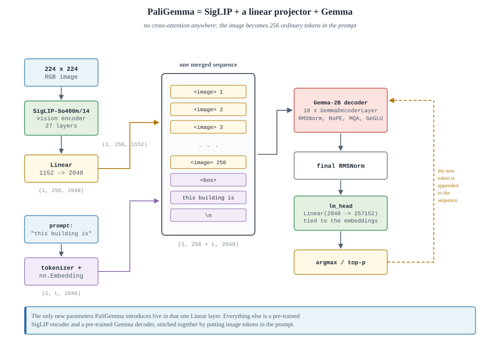
Read that diagram again and notice what is missing:
- There is no cross-attention anywhere.
- There is no fusion network, no gated attention, no adapter stack.
- The only new parameters in the whole model live in a single
nn.Linear(1152, 2048).
The entire trick is this: run the image through a vision encoder -> project the resulting vectors into the language model's embedding space -> then paste them into the prompt as if they were ordinary tokens.
The four moving parts
We'll build the model in the order the data flows through it:
- The input processor — resize and normalise the image, tokenise the
prompt, and splice
256placeholder<image>tokens in front of it. - The SigLIP vision tower — a Vision Transformer that turns \(224 \times 224 \times 3\) pixels into \(256\) vectors of size \(1152\).
- The projector and the merge — one linear layer, then a scatter that drops those \(256\) vectors into the \(256\) placeholder slots.
- The Gemma decoder — \(18\) layers of RMSNorm, rotary positional
embeddings, multi-query attention and a GeGLU feed-forward network, followed by a
tied
lm_headand a sampling loop.
Here are the concrete numbers we'll be working with throughout, taken from the
google/paligemma-3b-pt-224
checkpoint:
| SigLIP-So400m/14 | Gemma-2B | |
|---|---|---|
| hidden size | 1152 | 2048 |
| layers | 27 | 18 |
| attention heads | 16 | 8 (Q), 1 (K/V) |
| head dim | 72 | 256 |
| MLP inner dim | 4304 | 16384 |
| sequence length | 256 patches | 256 + prompt |
SiglipVisionConfig (hidden_size=768,
patch_size=16, num_hidden_layers=12) describe the
original ViT-B/16. They are only defaults — the real values come
from the checkpoint's config.json at load time. We'll quote the
checkpoint's numbers in the prose and the diagrams, because those are the shapes
that actually flow through the model when you run it.
Why a Contrastive Vision Encoder?
Before we write a line of code, we have to answer a design question that is easy to
skip over: we need an image encoder, and we already have excellent ones. ResNet-50
trained on ImageNet is a few lines of torchvision. Why not just use that?
The problem with a classification backbone
An ImageNet classifier is trained to minimise
\[ \mathcal{L} = -\log P(y \mid \mathbf{x}), \qquad y \in \{1, \dots, 1000\} \]Every gradient that ever reached that backbone was asking one question: which of these 1000 labels is it? So the representation it learns is shaped entirely by that question. Information that does not help separate the 1000 classes is actively discarded, because discarding it is free.
Concretely, a feature vector from an ImageNet backbone is excellent at telling you
"this is a golden retriever" and has no particular reason to encode the inner details such as:
- is the dog wet?,
- is it to the left of a red frisbee?,
- are there three of them?,
- was the photo taken at dusk?
These are the questions, I'll be asking the model to answer. The 1000-way label was a bottleneck, and it threw away most of what we need.
The contrastive alternative
Suppose that instead of a label, each image comes with the sentence a human wrote about it. Now the training signal is not "pick one of 1000 buckets" but "which of these N sentences describes this picture?"
To answer that, the encoder has to keep anything a caption might mention — color, count, relative position, material, mood, text in the image, the time of day.
This is the part that matters most for us. Contrastive training optimises image and text encoders jointly so that matching pairs have a high dot product:
\[ \mathbf{I}_i \cdot \mathbf{T}_i \;\gg\; \mathbf{I}_i \cdot \mathbf{T}_j \quad (i \neq j) \]For that inequality to hold, the image embedding must live in a space where direction encodes meaning in the same way it does for text.
That is why a single linear layer is enough to glue SigLIP to Gemma. We are not asking the projector to translate between two alien representations; we are asking it to perform a change of basis between two spaces that were already talking about the same things.
ImageNet has \(1.2\) million hand-labelled images, and labelling is the bottleneck. Image-caption pairs, on the other hand, can be scraped: CLIP was trained on \(400\) million, and SigLIP's data is measured in billions. Removing the human annotator from the loop is what made these encoders good.
Contrastive Learning and CLIP
So we want to train on (image, caption) pairs. But there's an immediate problem: we have positives — pairs that go together — and no negatives at all. Nobody annotated "this caption does not describe this image".
Without negatives the objective is degenerate. If all we ask is \(\mathbf{I}_i \cdot \mathbf{T}_i\) be large, the encoders can cheat perfectly: map every image and every caption to the same enormous vector. The dot products all go to infinity and the loss goes to zero. This is called representation collapse.
CLIP's answer is beautifully cheap: use the rest of the batch as the negatives. Take \(N\) pairs; caption \(j\) is, with overwhelming probability, not a description of image \(i\). One batch of \(N\) positives silently hands you \(N^2 - N\) negatives.
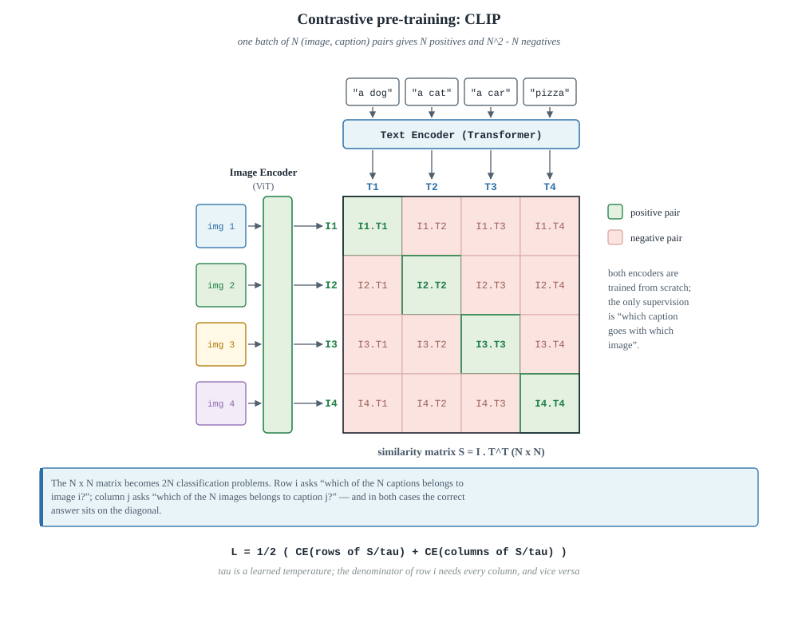
The Similarity Matrix
Run the batch through both towers and \(\ell_2\)-normalise the outputs:
\[ \mathbf{I} \in \mathbb{R}^{N \times d}, \qquad \mathbf{T} \in \mathbb{R}^{N \times d}, \qquad \|\mathbf{I}_i\|_2 = \|\mathbf{T}_j\|_2 = 1 \]Then one matrix multiplication gives every pairwise similarity at once:
\[ \mathbf{S} = \mathbf{I}\mathbf{T}^{\mathsf{T}} \in \mathbb{R}^{N \times N}, \qquad S_{ij} = \mathbf{I}_i \cdot \mathbf{T}_j = \cos\theta_{ij} \]Because both vectors are unit length, \(S_{ij} \in [-1, 1]\) is exactly the cosine of the angle between them. The diagonal holds the positives; everything off-diagonal is a negative.
Now we need a loss. And here is the observation that makes CLIP work: finding the diagonal is a classification problem. Row \(i\) of \(\mathbf{S}\) is a vector of \(N\) scores, and the correct answer is index \(i\). That is precisely what cross-entropy consumes.
Cosine similarities are trapped in \([-1, 1]\), which makes for a very flat softmax — even a perfect model could not push a probability above about \(e^{1}/(e^{1} + (N-1)e^{-1})\). We fix this with a learned temperature \(\tau\):
\[ \tilde{S}_{ij} = \frac{S_{ij}}{\tau} = S_{ij} \cdot \exp(s), \qquad s \in \mathbb{R} \text{ learned} \]Parameterising \(1/\tau\) as \(\exp(s)\) keeps it positive for free and makes the optimisation well behaved in log-space. In the trained CLIP checkpoint \(1/\tau \approx 100\), so the model chose to sharpen its scores by two orders of magnitude.
Intuition: \(\tau\) controls how harshly the loss punishes the hardest negative. Small \(\tau\) (sharp) means "the single closest wrong caption dominates the gradient"; large \(\tau\) (flat) means "spread the blame across all negatives". Letting the model learn it is strictly better than guessing.
The matrix is asymmetric in how we can read it, so CLIP reads it both ways.
Image → text. Softmax along each row: given image \(i\), which caption?
\[ \mathcal{L}_{\text{i2t}} = -\frac{1}{N}\sum_{i=1}^{N} \log \frac{\exp(S_{ii}/\tau)}{\sum_{j=1}^{N} \exp(S_{ij}/\tau)} \]Text → image. Softmax along each column: given caption \(j\), which image?
\[ \mathcal{L}_{\text{t2i}} = -\frac{1}{N}\sum_{j=1}^{N} \log \frac{\exp(S_{jj}/\tau)}{\sum_{i=1}^{N} \exp(S_{ij}/\tau)} \]And the final objective is the average:
\[ \mathcal{L}_{\text{CLIP}} = \tfrac{1}{2}\left(\mathcal{L}_{\text{i2t}} + \mathcal{L}_{\text{t2i}}\right) \]Why both? Because one direction alone admits a failure mode. Optimise only \(\mathcal{L}_{\text{i2t}}\) and nothing stops a single "hub" caption embedding from sitting close to every image — it would hurt that caption's own column, but we never look at columns. Symmetrising closes the loophole.
The whole loss reduces to two cross_entropy calls against
arange(N), because "the right answer is on the diagonal" is the
same statement as "the label for row \(i\) is \(i\)":
# CLIP: one softmax over each row, one over each column
logits = (image_embeds @ text_embeds.T) * logit_scale.exp() # (N, N)
labels = torch.arange(N, device=logits.device) # the diagonal
loss_i2t = F.cross_entropy(logits, labels) # softmax over dim=-1 (rows)
loss_t2i = F.cross_entropy(logits.T, labels) # softmax over the columns
loss = (loss_i2t + loss_t2i) / 2Note logits.T in the second call: transposing turns the columns into
rows, and cross_entropy always softmaxes over the last axis.
Look at the gradient of the row loss with respect to a negative score. Writing \(p_{ij}\) for the softmax probability,
\[ \frac{\partial \mathcal{L}_{\text{i2t}}}{\partial S_{ij}} = \frac{1}{N\tau}\left(p_{ij} - \mathbf{1}[i = j]\right) \]For \(i \neq j\) that is strictly positive: the loss is actively pushing every wrong pair apart. The constant-vector solution now has \(p_{ij} = 1/N\) everywhere and a loss of \(\log N\) — the worst possible score rather than the best.
Two consequences fall out of that denominator, and both of them hurt:
- Bigger batches are a better loss, not just faster training. \(N\) negatives per positive means the quality of the objective is tied to batch size. CLIP used \(N = 32{,}768\).
- The matrix must exist in one place. The denominator of row
\(i\) needs every column, so a data-parallel setup cannot keep
shards independent: every GPU must
all_gatherevery embedding, and the \(N \times N\) matrix is materialised somewhere. At \(N = 32{,}768\) that is a billion-entry matrix.
That coupling is the thing SigLIP removes.
An Aside: the Numerical Stability of Softmax
We've now written \(\exp(\cdot)\) a dozen times as if it were harmless. It is not.
This section is a detour, but it is the kind of detour that separates code that
trains from code that mysteriously produces nan on the fourth epoch —
and it explains two otherwise baffling lines in the SigLIP implementation.
Recall the definition:
\[ \text{softmax}(\mathbf{z})_i = \frac{e^{z_i}}{\sum_{j} e^{z_j}} \]Now ask what happens in float32. The largest finite
float32 is about \(3.4 \times 10^{38}\), and
A logit of \(90\) is not exotic. It is a perfectly ordinary pre-softmax score for an
overconfident attention head. And \(e^{90}\) is inf.
Both ends fail
Overflow. If any \(z_j\) exceeds \(88.7\), its exponential becomes
inf, the denominator becomes inf, and
Note that this poisons the entire row, not just the offending entry. One bad
logit and every probability in that distribution is nan — and
nan propagates through the backward pass into every weight it touches.
Underflow. The other direction is quieter but just as fatal. If every \(z_j < -103\) then every \(e^{z_j}\) rounds to \(0\), the denominator is \(0\), and we get \(0/0=\text{nan}\) again.
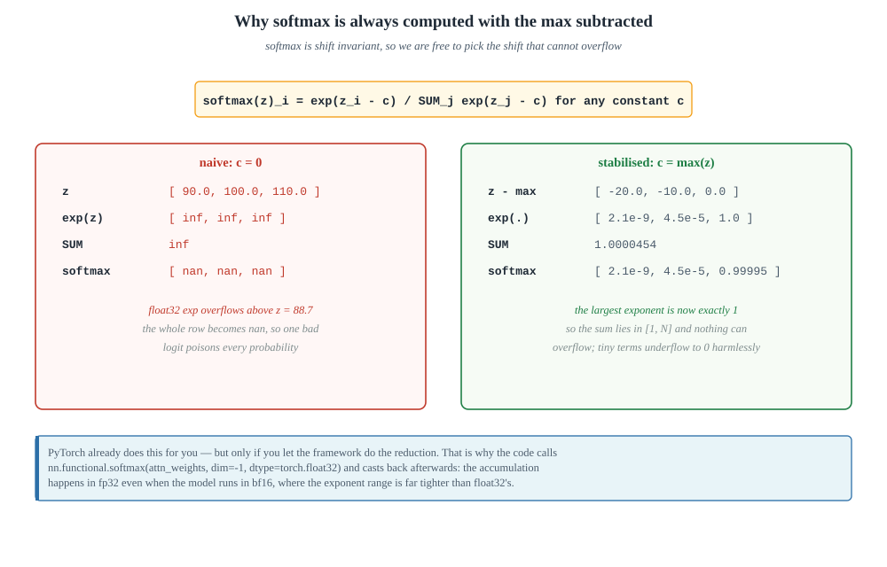
The Fix: Softmax is Shift Invariant
For any constant \(c\), independent of \(i\):
\[ \begin{aligned} \frac{e^{z_i - c}}{\sum_j e^{z_j - c}} &= \frac{e^{z_i} e^{-c}}{\sum_j e^{z_j} e^{-c}} \\[4pt] &= \frac{e^{-c}}{e^{-c}} \cdot \frac{e^{z_i}}{\sum_j e^{z_j}} \\[4pt] &= \text{softmax}(\mathbf{z})_i \end{aligned} \]The \(e^{-c}\) factors out of both the numerator and every term of the denominator, so it cancels exactly. Softmax does not care about the absolute level of its inputs — only the differences between them. We are therefore free to choose \(c\), and we may as well choose the one value that cannot go wrong.
With that choice, every shifted logit satisfies \(z_i - c \le 0\), so
\[ 0 < e^{z_i - c} \le 1 \]Overflow is now impossible — the largest term is exactly \(1\). And the denominator is bounded below by that same term:
\[ 1 \le \sum_j e^{z_j - c} \le N \]So division by zero is impossible too. Terms that underflow to \(0\) do so harmlessly: they were negligible relative to the maximum anyway, and the sum is still at least \(1\).
import torch
z = torch.tensor([90.0, 100.0, 110.0]) # perfectly ordinary logits
num = torch.exp(z) # tensor([inf, inf, inf])
p = num / num.sum() # tensor([nan, nan, nan])
# the same numbers, with the max subtracted first
num = torch.exp(z - z.max()) # tensor([2.06e-09, 4.54e-05, 1.00])
p = num / num.sum() # tensor([2.06e-09, 4.54e-05, 1.00])PyTorch's softmax already subtracts the max internally, so we get the
shift for free. What we do not get for free is the precision of the
accumulation — and that is what this line is about:
# modeling_siglip.py, inside SiglipAttention.forward
attn_weights = nn.functional.softmax(
attn_weights,
dim=-1, # reduce over the *key* axis
dtype=torch.float32, # accumulate in fp32 even if the model is bf16
).to(query_states.dtype) # ... then cast straight backTwo things are happening:
dim=-1reduces over the key axis. Get this wrong and you normalise over queries instead, which produces a perfectly finite, perfectly meaningless model.dtype=torch.float32forces the exponentials and their sum into fp32 even when the model is running inbfloat16.bfloat16keeps float32's exponent range but has only \(8\) bits of mantissa, so summing \(256\) small terms in bf16 loses real accuracy. The.to(query_states.dtype)casts straight back, so the extra precision costs us one temporary and nothing else.
log-sum-exp, logsigmoid, and
cross_entropy-on-logits.
F.cross_entropy rather than computing
log(softmax(x)) yourself. The fused version evaluates
\(z_i - c - \log\sum_j e^{z_j - c}\) directly and never forms the probability at
all — so a probability of \(10^{-50}\), which would round to \(0\) and give
\(\log 0 = -\infty\), comes out as a perfectly ordinary finite number.
From CLIP to SigLIP
We left CLIP with one structural complaint: the softmax normaliser couples the whole batch. Row \(i\)'s denominator sums over all \(N\) columns, so you cannot evaluate any part of the loss without the entire matrix.
SigLIP's contribution is to notice that the softmax was never actually necessary. We reached for cross-entropy because "find the diagonal" looked like a classification problem. But we can describe the same ground truth differently:
Every cell of the matrix is an independent yes/no question. Does caption \(j\) describe image \(i\)?
That is \(N^2\) binary classifications, not \(2N\) \(N\)-way ones. And binary classification does not need a normaliser — it needs a sigmoid.
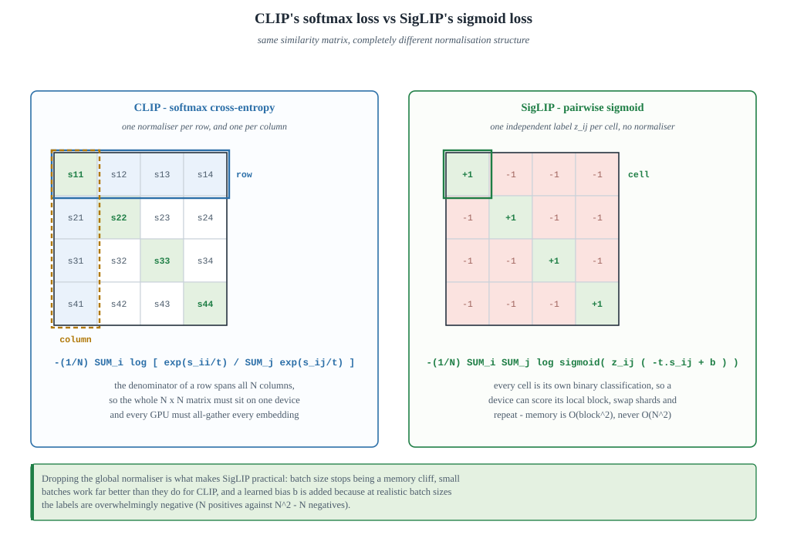
The Sigmoid Loss
Label each cell with \(\pm 1\):
\[ z_{ij} = \begin{cases} +1 & i = j \quad \text{(a matching pair)} \\ -1 & i \neq j \quad \text{(a mismatched pair)} \end{cases} \]And score it with a learned scale \(t\) and a learned bias \(b\):
\[ \mathcal{L}_{\text{SigLIP}} = -\frac{1}{N}\sum_{i=1}^{N}\sum_{j=1}^{N} \log \sigma\!\left(z_{ij}\left(t \cdot \mathbf{I}_i \cdot \mathbf{T}_j + b\right)\right) \]where \(\sigma(x) = 1/(1 + e^{-x})\) is the logistic sigmoid.
Unpack one term. When \(z_{ij} = +1\) the loss is \(-\log\sigma(\cdot)\), which is small when the score is large and positive — it pulls matching pairs together. When \(z_{ij} = -1\) it is \(-\log\sigma(-\cdot) = -\log(1 - \sigma(\cdot))\), which is small when the score is large and negative — it pushes mismatched pairs apart. Same two forces as before, but each cell now carries its own, complete loss term.
Count the labels. In a batch of \(N\), there are \(N\) positives and \(N^2 - N\) negatives, so the fraction of positives is
\[ \frac{N}{N^2} = \frac{1}{N} \]At \(N = 16{,}384\) that is \(0.006\%\). At initialisation the scores are roughly symmetric around \(0\), so \(\sigma(\cdot) \approx 0.5\) everywhere and the \(N^2 - N\) negative terms completely swamp the \(N\) positive ones. The model's fastest route to a lower loss is to predict "no match" for everything, which is \(99.994\%\) correct and completely useless.
The learned \(b\) is initialised strongly negative (\(b \approx -10\)) so that \(\sigma(t \cdot s + b) \approx 0\) from the start. The negatives begin already satisfied and contribute almost no gradient, which lets the \(N\) positive terms actually be heard. It is prior-correction, exactly as in focal loss for dense object detection.
# SigLIP: one independent sigmoid per cell, no row/column coupling
logits = (image_embeds @ text_embeds.T) * t.exp() + b # (N, N)
# +1 on the diagonal, -1 everywhere else
labels = 2 * torch.eye(N, device=logits.device) - 1 # (N, N)
loss = -F.logsigmoid(labels * logits).sum() / NNote F.logsigmoid rather than torch.log(torch.sigmoid(x)).
Same reasoning as the previous section: the fused version evaluates
\(-\log(1 + e^{-x})\) with the max-subtraction trick built in, so a strongly
negative score cannot underflow to \(\log 0 = -\infty\).
Because no term needs any other term, the \(N \times N\) matrix never has to exist. With \(D\) devices each holding \(N/D\) pairs, device \(d\) can:
- score its local \((N/D) \times (N/D)\) block,
- accumulate that block's loss,
- pass its text shard to the next device in a ring, and repeat \(D\) times.
Peak memory is \(O\!\left((N/D)^2\right)\) instead of \(O(N^2)\), and the
communication is a cheap ring rotation rather than an all_gather.
This is how the SigLIP paper trained at a batch size of \(1\) million.
Scaling to a million was the headline, but the finding that matters in practice is the opposite one: SigLIP is markedly better than CLIP at small batch sizes.
The reason is the same decoupling seen from the other end. CLIP's loss is defined in terms of a contrast against \(N - 1\) negatives — shrink \(N\) and you are literally optimising a different, weaker objective. SigLIP's per-cell loss has no \(N\) in it at all; a small batch just means fewer independent terms in the sum.
The paper finds the sigmoid loss ahead of softmax for every batch size below about \(16\)k, and that the two converge above it. Most people fine-tuning a vision encoder are living in the first regime.
pytorch-paligemma, because we are running inference on an
already-trained encoder. We needed the detour anyway: the contrastive objective is
the reason the encoder's output sits in a language-aligned space, which is the reason
one nn.Linear is enough to bolt it onto Gemma. Everything from here on
is the forward pass.
The Vision Transformer
Now for the encoder itself. The paper that introduced it is titled "An Image is Worth 16x16 Words", and that title is the entire idea — there is almost nothing else to learn.
A Transformer consumes a sequence of vectors. An image is a grid of pixels. So the only question is how to get from one to the other, and the honest answer is: chop the image into squares and call each square a word.
Why not feed it individual pixels? Because attention is \(O(n^2)\) in sequence length. A \(224 \times 224\) image has \(50{,}176\) pixels, so one attention matrix would be \(50{,}176^2 \approx 2.5\) billion entries — per head, per layer. Patches of \(14 \times 14\) reduce that to \(256\) tokens and a \(65{,}536\)-entry matrix, a \(38{,}000\times\) saving.
Patchify: the Patch Embedding
Split the image into a grid of non-overlapping squares of side \(P\):
\[ N_{\text{patches}} = \left(\frac{H}{P}\right)\left(\frac{W}{P}\right) = \left(\frac{224}{14}\right)^2 = 16 \times 16 = 256 \]Flatten each patch and project it to the model dimension:
\[ \mathbf{x}_p \in \mathbb{R}^{P \cdot P \cdot C} = \mathbb{R}^{588} \quad \xrightarrow{\;\mathbf{W}_E\;} \quad \mathbf{e}_p \in \mathbb{R}^{d} = \mathbb{R}^{1152} \]with \(\mathbf{W}_E \in \mathbb{R}^{588 \times 1152}\) shared across all patches — exactly as a word embedding matrix is shared across all positions.
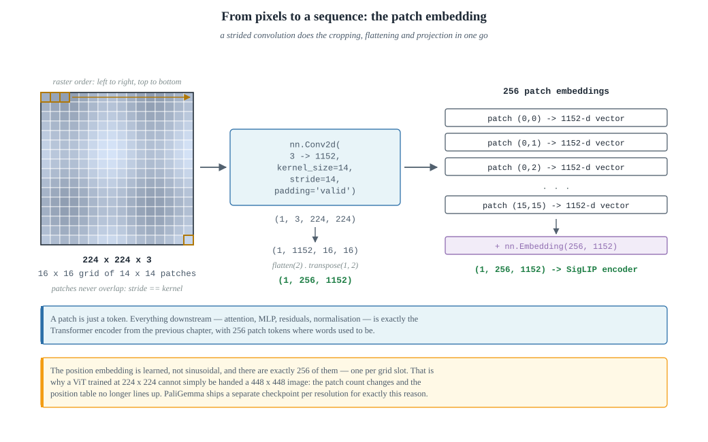
Written out, patchifying sounds like three operations: crop, flatten, matrix
multiply. In practice it is one, because a convolution with
kernel_size == stride already does all three.
Think about what nn.Conv2d(3, 1152, kernel_size=14, stride=14) does.
The kernel covers a \(14 \times 14 \times 3\) window — one patch. The stride
equals the kernel size, so consecutive windows never overlap and never leave a
gap — a perfect tiling. And each of the \(1152\) output channels is a dot product
of that window with a learned filter — which is exactly one row of
\(\mathbf{W}_E\).
So "crop, flatten, project" and "strided convolution" are the same arithmetic, and the convolution version is a single fused cuDNN call:
x = torch.randn(1, 3, 224, 224)
conv = nn.Conv2d(3, 1152, kernel_size=14, stride=14, padding="valid")
h = conv(x) # (1, 1152, 16, 16) one vector per patch
h = h.flatten(2) # (1, 1152, 256) grid collapsed to a sequence
h = h.transpose(1, 2) # (1, 256, 1152) [Batch, Tokens, Channels]The flatten(2) collapses the \(16 \times 16\) spatial grid into
\(256\) sequence positions in row-major order — left to right,
then top to bottom — and transpose(1, 2) puts the result into the
\([\text{Batch}, \text{Tokens}, \text{Channels}]\) layout every Transformer
expects.
That flatten destroyed all spatial information. Patch \(0\) and patch
\(255\) are now just two rows in a matrix, and self-attention is permutation
equivariant — shuffle the rows and you get the same answer, shuffled.
So, as in the previous chapter, we add a positional signal:
\[ \mathbf{h}_p^{(0)} = \mathbf{e}_p + \mathbf{P}_p, \qquad \mathbf{P} \in \mathbb{R}^{256 \times 1152} \]But notice \(\mathbf{P}\) is an nn.Embedding — a plain lookup table
of \(256\) learned vectors — not the fixed sine/cosine construction from
the original Transformer. Two reasons:
- The sequence length is fixed. A sentence can be any length, so sinusoids' ability to extrapolate to unseen positions is genuinely useful. An image at a fixed resolution always has exactly \(256\) patches. There is nothing to extrapolate to.
- The structure is 2-D, not 1-D. Patch \(p\) and patch \(p + 16\) are vertical neighbours, which a 1-D sinusoid has no way to express. A learned table can discover the grid topology from data — and when you visualise trained ViT position embeddings, it does: nearby embeddings are similar in both the row and column directions.
-448 and -896
PaliGemma checkpoints are. But it is a separate checkpoint, not a runtime
option.
Two things the original ViT had that SigLIP's vision tower does not.
ViT prepended a learnable [CLS] token and read the classification
head off its final hidden state. SigLIP drops it: there is no classification
head here at all. We want all \(256\) patch vectors, because all \(256\) are
going into the prompt. In the config this is the
vision_use_head: false flag, and it is why
SiglipVisionTransformer.forward returns
last_hidden_state and nothing else.
And unlike the decoder we are about to build, the vision encoder's attention is
fully bidirectional — look at
SiglipAttention.forward and you'll find no mask
argument anywhere. Causality is a property of generating a sequence
left to right. An image is not generated; it is perceived, all at once. The
patch in the top-left corner absolutely should be able to attend to the one in
the bottom-right.
And that really is it. Once the pixels are \(256\) vectors of size \(1152\), the encoder layer is the one we already derived:
\[ \begin{aligned} \mathbf{h}' &= \mathbf{h} + \text{MHA}\!\left(\text{LN}(\mathbf{h})\right) \\ \mathbf{h}'' &= \mathbf{h}' + \text{MLP}\!\left(\text{LN}(\mathbf{h}')\right) \end{aligned} \]Same scaled dot-product attention, same multi-head split, same two-layer feed-forward network, same residual connections, same layer normalisation. Stack it \(27\) times.
There is exactly one structural difference from the encoder in the Transformer
chapter, and it is where the LN sits.
Pre-Norm vs Post-Norm
In the original Transformer, normalisation came after the sublayer and after the residual addition:
\[ \mathbf{h}' = \text{LN}\!\left(\mathbf{h} + \text{MHA}(\mathbf{h})\right) \qquad \text{(post-norm)} \]Every modern Transformer — ViT, SigLIP, Gemma, and the one in our code — puts it before:
\[ \mathbf{h}' = \mathbf{h} + \text{MHA}\!\left(\text{LN}(\mathbf{h})\right) \qquad \text{(pre-norm)} \]It looks like a cosmetic reshuffle. It is the difference between a \(27\)-layer encoder that trains and one that needs a carefully tuned warmup schedule to converge at all.
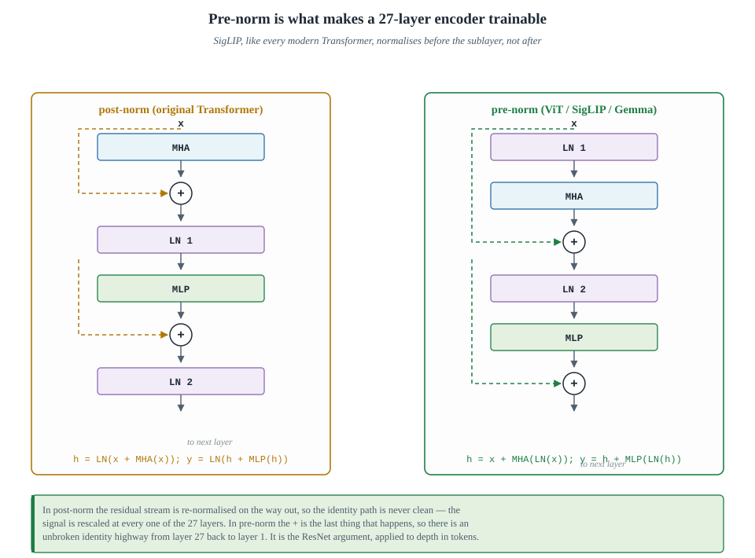
The Core Idea: keep the identity path clean
We argued in the ResNet chapter that the value of a residual connection is the \(+\mathbf{I}\) in its Jacobian:
\[ \frac{\partial \mathbf{h}'}{\partial \mathbf{h}} = \mathbf{I} + \frac{\partial F(\mathbf{h})}{\partial \mathbf{h}} \]That \(\mathbf{I}\) is a gradient highway. Even if the learned branch contributes nothing, the gradient arrives at the previous layer undamaged.
Now look at what post-norm does to it. The addition is no longer the last operation — the \(\text{LN}\) is:
\[ \frac{\partial \mathbf{h}'}{\partial \mathbf{h}} = \underbrace{\mathbf{J}_{\text{LN}}}_{\text{rescales everything}} \left(\mathbf{I} + \frac{\partial F}{\partial \mathbf{h}}\right) \]The highway is still there, but it now runs through a toll booth at every single floor. \(\mathbf{J}_{\text{LN}}\) scales roughly as \(1/\sigma\), and across \(L\) layers those factors multiply. The product of \(27\) numbers that are each merely close to \(1\) is not close to \(1\).
In pre-norm, the \(+\) is the outermost operation, so
\[ \mathbf{h}^{(L)} = \mathbf{h}^{(0)} + \sum_{\ell=1}^{L} F_\ell\!\left(\text{LN}\!\left(\mathbf{h}^{(\ell-1)}\right)\right) \]The residual stream is a pure sum, never a product. There is an unbroken identity path from layer \(27\) straight back to the patch embedding, and each layer contributes an additive refinement to it.
Why Pre-Norm Works
Post-norm Transformers famously need a learning-rate warmup. The reason is now visible: at initialisation, that product of \(\mathbf{J}_{\text{LN}}\) factors makes the gradient at the first layer enormous relative to the last. Taking a full-sized step immediately destroys the embedding. Warmup is a workaround for a badly conditioned Jacobian.
Pre-norm's additive stream keeps gradient magnitudes roughly comparable across depth, so you can start at the target learning rate.
In pre-norm, if \(F_\ell \to \mathbf{0}\) then \(\mathbf{h}^{(\ell)} = \mathbf{h}^{(\ell-1)}\) exactly. The layer is a perfect identity and costs nothing. Adding depth can therefore never make the model worse — the same argument that let ResNet go to \(152\) layers.
In post-norm, \(F_\ell \to \mathbf{0}\) still leaves \(\mathbf{h}^{(\ell)} = \text{LN}(\mathbf{h}^{(\ell-1)})\). The layer cannot get out of the way; it always rescales.
Because \(\text{LN}\) is applied on the way in, attention and the MLP are guaranteed inputs with zero mean and unit variance no matter how large the residual stream has grown. The \(QK^{\mathsf{T}}\) scores stay in a sane range, which — to close the loop with the last section — is the other half of why softmax does not overflow.
Pre-norm has a loose end. The residual stream is never normalised on the way out, so after \(27\) additive updates \(\mathbf{h}^{(27)}\) can have a large and fairly arbitrary scale. Every pre-norm Transformer therefore adds a single normalisation at the very end of the stack.
In our code that is self.post_layernorm in
SiglipVisionTransformer, and self.norm in
GemmaModel. If you ever wonder why those exist when every layer
already normalises — this is why.
Batch Norm, Layer Norm, RMS Norm
We keep saying "normalise" as though there were one way to do it. There are three in
this model, and the differences matter: SigLIP uses nn.LayerNorm, Gemma
uses GemmaRMSNorm, and the ResNet we built in Chapter 3 used
nn.BatchNorm2d. All three divide by a standard deviation. The question
is always the same: which numbers go into that statistic?
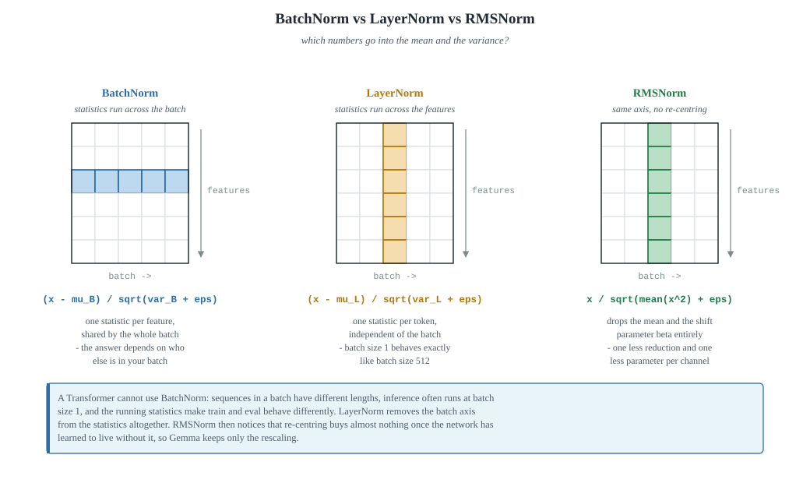
Batch Normalization
BatchNorm normalises each feature across the batch. For activations \(x_{b,c}\) with batch index \(b\) and channel \(c\):
\[ \mu_c = \frac{1}{B}\sum_{b=1}^{B} x_{b,c}, \qquad \sigma_c^2 = \frac{1}{B}\sum_{b=1}^{B}\left(x_{b,c} - \mu_c\right)^2 \] \[ \hat{x}_{b,c} = \gamma_c \frac{x_{b,c} - \mu_c}{\sqrt{\sigma_c^2 + \epsilon}} + \beta_c \]The statistics are indexed by \(c\) only — one mean and one variance per channel, computed by looking at every example in the batch.
This works beautifully for a ConvNet on fixed-size images, and it is a disaster for a Transformer. Three reasons:
- Examples become entangled. \(\hat{x}_{b,c}\) is a function of every other example in the batch. The prediction for your image depends on which images happened to be batched with it.
- Train and eval behave differently. At inference there may be no
batch, so BatchNorm has to keep an exponential moving average of \(\mu_c\) and
\(\sigma_c^2\) and switch to it in
eval()mode. Now the model computes a different function depending on a mode flag — and a train/eval skew is one of the most common sources of "it worked in training" bugs. - Variable sequence length breaks the statistic. Sequences are padded to the longest in the batch. Those pad positions are meaningless, but they land in the same channel \(c\) and pollute \(\mu_c\). The statistic now depends on how much padding you happened to have.
Point 1 is fatal for us on its own: we run PaliGemma at batch size \(1\), where the batch variance is identically \(0\) and the whole operation is undefined.
Layer Normalization
LayerNorm rotates the reduction axis by ninety degrees: normalise each token across its features.
\[ \mu_b = \frac{1}{d}\sum_{c=1}^{d} x_{b,c}, \qquad \sigma_b^2 = \frac{1}{d}\sum_{c=1}^{d}\left(x_{b,c} - \mu_b\right)^2 \] \[ \hat{\mathbf{x}}_b = \boldsymbol{\gamma} \odot \frac{\mathbf{x}_b - \mu_b}{\sqrt{\sigma_b^2 + \epsilon}} + \boldsymbol{\beta} \]Now the statistics are indexed by \(b\) — every token computes its own mean and variance over its own \(1152\) numbers, and the batch axis has vanished from the formula entirely.
Every one of BatchNorm's problems evaporates:
- Tokens are independent, so batch size \(1\) behaves identically to batch size \(512\).
- There are no running statistics, so
train()andeval()compute the same function. - Padding cannot contaminate anything, because no statistic is ever shared across positions.
The learnable \(\boldsymbol{\gamma}, \boldsymbol{\beta} \in \mathbb{R}^{d}\) are still per-channel — only the statistics changed axis, not the parameters.
x = torch.randn(32, 256, 1152) # (Batch, Tokens, Channels)
nn.BatchNorm1d(256)(x.transpose(1, 2)) # reduces over dim 0 and 2 -> batch coupled
nn.LayerNorm(1152)(x) # reduces over dim 2 only -> batch freeRMS Normalization
RMSNorm asks whether the re-centring was ever doing any work, and concludes it was not. Keep only the rescaling:
\[ \text{RMS}(\mathbf{x}) = \sqrt{\frac{1}{d}\sum_{c=1}^{d} x_c^2}, \qquad \hat{\mathbf{x}} = \boldsymbol{\gamma} \odot \frac{\mathbf{x}}{\sqrt{\text{RMS}(\mathbf{x})^2 + \epsilon}} \]Compare the two side by side:
# LayerNorm: subtract the mean, divide by the standard deviation, scale, shift
(x - x.mean(-1, keepdim=True)) / (x.var(-1, keepdim=True) + eps).sqrt() * g + b
# RMSNorm: no mean, no shift - just divide by the root mean square and scale
x * torch.rsqrt(x.pow(2).mean(-1, keepdim=True) + eps) * gThree things are gone: the mean subtraction, the \(\boldsymbol{\beta}\) shift, and one of the two reduction passes over the feature axis.
The useful property of normalisation is scale invariance: for any \(\alpha > 0\),
\[ \text{RMSNorm}(\alpha\mathbf{x}) = \text{RMSNorm}(\mathbf{x}) \]which is exactly what stops activations from exploding as depth grows — and it holds without the mean. The mean subtraction gave shift invariance, which turns out not to be load-bearing: the layer immediately downstream is a linear map with a bias, and it can absorb any constant offset itself.
Empirically RMSNorm matches LayerNorm's quality while being \(7\)–\(64\%\) faster depending on the shape, which is why Llama, Gemma, Mistral and almost everything released after 2022 uses it.
Here is Gemma's version, and there are two details worth pausing on:
class GemmaRMSNorm(nn.Module):
def __init__(self, dim: int, eps: float = 1e-6):
super().__init__()
self.eps = eps
self.weight = nn.Parameter(torch.zeros(dim))
def _norm(self, x):
return x * torch.rsqrt(x.pow(2).mean(-1, keepdim=True) + self.eps)
def forward(self, x):
output = self._norm(x.float())
# Llama does x.to(float16) * w whilst Gemma is (x * w).to(float16)
# See https://github.com/huggingface/transformers/pull/29402
output = output * (1.0 + self.weight.float())
return output.type_as(x)1. torch.rsqrt, not 1 / torch.sqrt.
The reciprocal square root is a single hardware instruction. Writing it as a
division by a square root is two operations and a rounding step.
2. (1.0 + self.weight), with
weight initialised to zeros. This is a
re-parameterisation, not a different function. Most implementations initialise
\(\boldsymbol{\gamma}\) to ones; Gemma stores \(\gamma - 1\) and adds the one
back at runtime. The effect is that the stored parameter is zero at
initialisation, so weight decay pulls \(\gamma\) toward \(1\) — the identity —
rather than toward \(0\), which would annihilate the signal. A small thing, but
it is why the checkpoint is full of near-zero norm weights rather than
near-one ones.
And note the .float() / .type_as(x) sandwich: the same
precision argument as the softmax. Squaring \(2048\) bf16 numbers and summing
them loses real accuracy, so the reduction is done in fp32 and cast back.
Coding SigLIP
Enough theory. Let's build the vision tower, bottom up. Every snippet below is the actual
contents of modeling_siglip.py — eight small classes, and each one is a
direct translation of something we derived above.
Keep this shape journey in mind; it is the whole file:
\[ (1, 3, 224, 224) \;\longrightarrow\; (1, 256, 1152) \;\longrightarrow\; (1, 256, 1152) \]Pixels in, \(256\) patch tokens out, then \(27\) layers that refine them in place without ever changing the shape again.
SiglipVisionConfig
First, a plain container for the hyperparameters. No logic, but it is worth reading because every number we have quoted so far appears here:
class SiglipVisionConfig:
def __init__(
self,
hidden_size=768,
intermediate_size=3072,
num_hidden_layers=12,
num_attention_heads=12,
num_channels=3,
image_size=224,
patch_size=16,
layer_norm_eps=1e-6,
attention_dropout=0.0,
num_image_tokens: int = None,
**kwargs
):
super().__init__()
self.hidden_size = hidden_size
self.intermediate_size = intermediate_size
self.num_hidden_layers = num_hidden_layers
self.num_attention_heads = num_attention_heads
self.num_channels = num_channels
self.patch_size = patch_size
self.image_size = image_size
self.attention_dropout = attention_dropout
self.layer_norm_eps = layer_norm_eps
self.num_image_tokens = num_image_tokensThe relationships between these are worth making explicit:
num_patches = (image_size // patch_size) ** 2— with the checkpoint'spatch_size=14andimage_size=224that is \(256\).head_dim = hidden_size // num_attention_heads— \(1152/16 = 72\).intermediate_sizeis the MLP's inner width. For SigLIP-So400m it is \(4304\), which is \(3.7\times\) the hidden size rather than the usual \(4\times\) — the "So" in So400m stands for "shape-optimised", meaning the width/depth/MLP ratios were tuned by a scaling-law search rather than picked by convention.layer_norm_eps=1e-6is the \(\epsilon\) in the LayerNorm denominator.
num_image_tokens defaults to None
here and is filled in by PaliGemmaConfig, which computes
(image_size // patch_size) ** 2 itself. The processor needs that number
to know how many <image> placeholders to insert, so it has to
agree with the vision tower exactly — deriving it rather than hard-coding it is what
keeps the two in sync across the \(224\)/\(448\)/\(896\) checkpoints.
SiglipVisionEmbeddings
This is patchify plus positions — the only place in the vision tower where the data changes shape:
class SiglipVisionEmbeddings(nn.Module):
def __init__(self, config: SiglipVisionConfig):
super().__init__()
self.config = config
self.embed_dim = config.hidden_size
self.image_size = config.image_size
self.patch_size = config.patch_size
self.patch_embedding = nn.Conv2d(
in_channels=config.num_channels,
out_channels=self.embed_dim,
kernel_size=self.patch_size,
stride=self.patch_size,
padding="valid", # This indicates no padding is added
)
self.num_patches = (self.image_size // self.patch_size) ** 2
self.num_positions = self.num_patches
self.position_embedding = nn.Embedding(self.num_positions, self.embed_dim)
self.register_buffer(
"position_ids",
torch.arange(self.num_positions).expand((1, -1)),
persistent=False,
)
def forward(self, pixel_values: torch.FloatTensor) -> torch.Tensor:
_, _, height, width = pixel_values.shape # [Batch_Size, Channels, Height, Width]
# Convolve the `patch_size` kernel over the image, with no overlapping patches since the stride is equal to the kernel size
# The output of the convolution will have shape [Batch_Size, Embed_Dim, Num_Patches_H, Num_Patches_W]
# where Num_Patches_H = height // patch_size and Num_Patches_W = width // patch_size
patch_embeds = self.patch_embedding(pixel_values)
# [Batch_Size, Embed_Dim, Num_Patches_H, Num_Patches_W] -> [Batch_Size, Embed_Dim, Num_Patches]
# where Num_Patches = Num_Patches_H * Num_Patches_W
embeddings = patch_embeds.flatten(2)
# [Batch_Size, Embed_Dim, Num_Patches] -> [Batch_Size, Num_Patches, Embed_Dim]
embeddings = embeddings.transpose(1, 2)
# Add position embeddings to each patch. Each positional encoding is a vector of size [Embed_Dim]
embeddings = embeddings + self.position_embedding(self.position_ids)
# [Batch_Size, Num_Patches, Embed_Dim]
return embeddingsFour lines of forward, one per step of the derivation:
patch_embedding(pixel_values)
\((1, 3, 224, 224) \rightarrow (1, 1152, 16, 16)\). The strided convolution, as
derived above. padding="valid" is the explicit way of writing "no
padding" — with \(224\) divisible by \(14\) the tiling is exact, and if it were
not, we would rather fail than silently pad a partial patch.
patch_embeds.flatten(2)
\((1, 1152, 16, 16) \rightarrow (1, 1152, 256)\). Flattens every axis from index \(2\) onward, collapsing the \(16 \times 16\) grid into \(256\) positions in row-major order.
embeddings.transpose(1, 2)
\((1, 1152, 256) \rightarrow (1, 256, 1152)\). Swaps channels and sequence. The convolution produced "channels-first" because that is how convolutions think; attention needs "sequence-first".
+ position_embedding(position_ids)
\((1, 256, 1152)\), unchanged. Adds the learned position vectors.
Look at how position_ids is created:
self.register_buffer(
"position_ids",
torch.arange(self.num_positions).expand((1, -1)),
persistent=False,
)
It is just [0, 1, 2, ..., 255], and it never changes. Three details:
register_bufferrather than an attribute: buffers move with.to(device)and.cuda()along with the parameters. A bareself.position_ids = torch.arange(...)would stay on the CPU and crash the moment you moved the model to a GPU.persistent=False: keep it out of thestate_dict. It is derived from the config, so saving it would just bloat the checkpoint and create a shape to mismatch on..expand((1, -1))adds a batch dimension as a view — stride \(0\), no copy.
SiglipAttention
The multi-head self-attention from the previous chapter, with no mask. The constructor:
class SiglipAttention(nn.Module):
"""Multi-headed attention from 'Attention Is All You Need' paper"""
def __init__(self, config):
super().__init__()
self.config = config
self.embed_dim = config.hidden_size
self.num_heads = config.num_attention_heads
self.head_dim = self.embed_dim // self.num_heads
self.scale = self.head_dim**-0.5 # Equivalent to 1 / sqrt(self.head_dim)
self.dropout = config.attention_dropout
self.k_proj = nn.Linear(self.embed_dim, self.embed_dim)
self.v_proj = nn.Linear(self.embed_dim, self.embed_dim)
self.q_proj = nn.Linear(self.embed_dim, self.embed_dim)
self.out_proj = nn.Linear(self.embed_dim, self.embed_dim)Note self.scale = self.head_dim ** -0.5. That is
\(1/\sqrt{d_k} = 1/\sqrt{72}\), precomputed once at construction so the forward pass
can multiply instead of divide — multiplication is cheaper, and doing it
once beats doing it every call.
And all four projections are square, \(1152 \rightarrow 1152\), because the heads are a reshape of a single projection rather than \(16\) separate ones. We project to the full width and then split.
Now the forward pass:
def forward(
self,
hidden_states: torch.Tensor,
) -> Tuple[torch.Tensor, Optional[torch.Tensor]]:
# hidden_states: [Batch_Size, Num_Patches, Embed_Dim]
batch_size, seq_len, _ = hidden_states.size()
# query_states: [Batch_Size, Num_Patches, Embed_Dim]
query_states = self.q_proj(hidden_states)
# key_states: [Batch_Size, Num_Patches, Embed_Dim]
key_states = self.k_proj(hidden_states)
# value_states: [Batch_Size, Num_Patches, Embed_Dim]
value_states = self.v_proj(hidden_states)
# query_states: [Batch_Size, Num_Heads, Num_Patches, Head_Dim]
query_states = query_states.view(batch_size, seq_len, self.num_heads, self.head_dim).transpose(1, 2)
key_states = key_states.view(batch_size, seq_len, self.num_heads, self.head_dim).transpose(1, 2)
value_states = value_states.view(batch_size, seq_len, self.num_heads, self.head_dim).transpose(1, 2)
# Calculate the attention using the formula Q * K^T / sqrt(d_k). attn_weights: [Batch_Size, Num_Heads, Num_Patches, Num_Patches]
attn_weights = (torch.matmul(query_states, key_states.transpose(2, 3)) * self.scale)
if attn_weights.size() != (batch_size, self.num_heads, seq_len, seq_len):
raise ValueError(
f"Attention weights should be of size {(batch_size, self.num_heads, seq_len, seq_len)}, but is"
f" {attn_weights.size()}"
)
# Apply the softmax row-wise. attn_weights: [Batch_Size, Num_Heads, Num_Patches, Num_Patches]
attn_weights = nn.functional.softmax(attn_weights, dim=-1, dtype=torch.float32).to(query_states.dtype)
# Apply dropout only during training
attn_weights = nn.functional.dropout(attn_weights, p=self.dropout, training=self.training)
# Multiply the attention weights by the value states. attn_output: [Batch_Size, Num_Heads, Num_Patches, Head_Dim]
attn_output = torch.matmul(attn_weights, value_states)
if attn_output.size() != (batch_size, self.num_heads, seq_len, self.head_dim):
raise ValueError(
f"`attn_output` should be of size {(batch_size, self.num_heads, seq_len, self.head_dim)}, but is"
f" {attn_output.size()}"
)
# [Batch_Size, Num_Heads, Num_Patches, Head_Dim] -> [Batch_Size, Num_Patches, Num_Heads, Head_Dim]
attn_output = attn_output.transpose(1, 2).contiguous()
# [Batch_Size, Num_Patches, Num_Heads, Head_Dim] -> [Batch_Size, Num_Patches, Embed_Dim]
attn_output = attn_output.reshape(batch_size, seq_len, self.embed_dim)
# [Batch_Size, Num_Patches, Embed_Dim]
attn_output = self.out_proj(attn_output)
return attn_output, attn_weightsThe shape choreography is the part worth slowing down for.
query_states.view(batch_size, seq_len, self.num_heads, self.head_dim).transpose(1, 2)
Two steps that are easy to conflate:
\[ (1, 256, 1152) \;\xrightarrow{\text{view}}\; (1, 256, 16, 72) \;\xrightarrow{\text{transpose}}\; (1, 16, 256, 72) \]view is free — it reinterprets the \(1152\) contiguous numbers as
\(16\) groups of \(72\) without moving anything. The transpose then
brings the head axis forward so that the following matmul treats
\((1, 16)\) as batch dimensions and does \(16\) independent
\((256 \times 72)\) attentions in one call.
This is why the heads are "independent" despite sharing one weight
matrix: head \(h\) only ever sees columns
\([72h, 72h+72)\) of \(W_Q\), and the matmul never mixes across the head axis.
Sixteen separate nn.Linear(1152, 72) layers would compute exactly
the same thing, \(16\times\) more slowly.
attn_weights = torch.matmul(query_states, key_states.transpose(2, 3)) * self.scale\[ (1, 16, 256, 72) \times (1, 16, 72, 256) \rightarrow (1, 16, 256, 256) \]
That is \(\frac{QK^{\mathsf{T}}}{\sqrt{d_k}}\) — the familiar formula, computed
for all \(16\) heads at once. The transpose(2, 3) acts on the last
two axes only, leaving batch and head alone.
The result is a \(256 \times 256\) matrix per head: how much each patch attends to each other patch. Every entry is filled in — this is the bidirectional attention we argued for. There is no mask in this function at all.
The softmax line is the one we dissected two sections ago:
dim=-1 to reduce over keys, dtype=torch.float32 for a
safe accumulation, then a cast back.
Dropout follows, and note training=self.training — with
attention_dropout=0.0 in the config this is a no-op for inference
anyway, but it is the correct way to write it: PyTorch's functional dropout does
not consult module mode on its own.
Then the weighted sum of values:
\[ (1, 16, 256, 256) \times (1, 16, 256, 72) \rightarrow (1, 16, 256, 72) \]attn_output = attn_output.transpose(1, 2).contiguous() attn_output = attn_output.reshape(batch_size, seq_len, self.embed_dim)\[ (1, 16, 256, 72) \;\xrightarrow{\text{transpose}}\; (1, 256, 16, 72) \;\xrightarrow{\text{reshape}}\; (1, 256, 1152) \]
The exact inverse of the split. .contiguous() is mandatory here:
transpose returns a view with permuted strides, and
reshape on a non-contiguous tensor that cannot be expressed as a
restride will either copy silently or raise. Calling
contiguous() makes the copy explicit.
Then out_proj — which, exactly as in the Transformer chapter, is what
lets the \(16\) heads' outputs actually talk to one another. Concatenation alone
leaves them in \(16\) disjoint subspaces.
raise ValueError blocks
They look like clutter and they are the opposite. Attention is almost all reshaping, and a reshape bug does not crash — it produces a tensor of the right size with the numbers in the wrong places, and the model trains to mediocrity while you look for the problem elsewhere. Asserting the shape at the two points where it is easiest to get wrong is cheap insurance.
SiglipMLP
Up, non-linearity, down — the position-wise feed-forward network:
class SiglipMLP(nn.Module):
def __init__(self, config):
super().__init__()
self.config = config
self.fc1 = nn.Linear(config.hidden_size, config.intermediate_size)
self.fc2 = nn.Linear(config.intermediate_size, config.hidden_size)
def forward(self, hidden_states: torch.Tensor) -> torch.Tensor:
# [Batch_Size, Num_Patches, Embed_Dim] -> [Batch_Size, Num_Patches, Intermediate_Size]
hidden_states = self.fc1(hidden_states)
# hidden_states: [Batch_Size, Num_Patches, Intermediate_Size]
hidden_states = nn.functional.gelu(hidden_states, approximate="tanh")
# [Batch_Size, Num_Patches, Intermediate_Size] -> [Batch_Size, Num_Patches, Embed_Dim]
hidden_states = self.fc2(hidden_states)
return hidden_statesSame role as in the Transformer chapter: attention moves information between tokens but is fundamentally a weighted average, so a stack of pure attention layers would be close to linear. The MLP is where each token gets transformed non-linearly, independently of all the others — and it is where most of the parameters live.
The one new thing is the activation. The Transformer used ReLU; SigLIP uses GELU:
\[ \text{GELU}(x) = x \cdot \Phi(x) = x \cdot \tfrac{1}{2}\!\left(1 + \text{erf}\!\left(x/\sqrt{2}\right)\right) \]where \(\Phi\) is the standard normal CDF. Read it as a soft gate: ReLU multiplies \(x\) by a hard \(\mathbf{1}[x > 0]\), while GELU multiplies it by the probability that a standard normal is below \(x\). Inputs near zero are attenuated smoothly rather than clipped, so there is no kink in the derivative and no dead-unit regime where the gradient is exactly \(0\).
And approximate="tanh" selects the cheaper closed form:
erf form and the
tanh approximation differ by about \(10^{-3}\), which sounds negligible
until you compound it over \(27\) layers. If you ever port a checkpoint and find
your outputs are nearly right, the activation variant is one of the first
things to check.
SiglipEncoderLayer
Now assemble one layer. This is the pre-norm block, written out:
class SiglipEncoderLayer(nn.Module):
def __init__(self, config: SiglipVisionConfig):
super().__init__()
self.embed_dim = config.hidden_size
self.self_attn = SiglipAttention(config)
self.layer_norm1 = nn.LayerNorm(self.embed_dim, eps=config.layer_norm_eps)
self.mlp = SiglipMLP(config)
self.layer_norm2 = nn.LayerNorm(self.embed_dim, eps=config.layer_norm_eps)
# Ignore copy
def forward(
self,
hidden_states: torch.Tensor
) -> torch.Tensor:
# residual: [Batch_Size, Num_Patches, Embed_Dim]
residual = hidden_states
# [Batch_Size, Num_Patches, Embed_Dim] -> [Batch_Size, Num_Patches, Embed_Dim]
hidden_states = self.layer_norm1(hidden_states)
# [Batch_Size, Num_Patches, Embed_Dim] -> [Batch_Size, Num_Patches, Embed_Dim]
hidden_states, _ = self.self_attn(hidden_states=hidden_states)
# [Batch_Size, Num_Patches, Embed_Dim]
hidden_states = residual + hidden_states
# residual: [Batch_Size, Num_Patches, Embed_Dim]
residual = hidden_states
# [Batch_Size, Num_Patches, Embed_Dim] -> [Batch_Size, Num_Patches, Embed_Dim]
hidden_states = self.layer_norm2(hidden_states)
# [Batch_Size, Num_Patches, Embed_Dim] -> [Batch_Size, Num_Patches, Embed_Dim]
hidden_states = self.mlp(hidden_states)
# [Batch_Size, Num_Patches, Embed_Dim]
hidden_states = residual + hidden_states
return hidden_statesRead the pattern — it appears twice, identically:
residual = hidden_states— save the input before normalising.- normalise, then apply the sublayer.
hidden_states = residual + hidden_states— add the unnormalised input back.
Step 3 is the whole pre-norm argument in one line. The thing added back is the raw
residual, not layer_norm1(residual), which is what keeps
the identity path exact:
Also note the second residual = hidden_states on the line after the first
addition. It is easy to read past, but it is essential: the MLP's residual is the
output of the attention block, not the layer's original input. Getting that wrong
gives you two parallel branches instead of two sequential ones.
The shape is \((1, 256, 1152)\) at every single line. A Transformer layer is a
shape-preserving refinement, which is exactly why you can stack
\(27\) of them in a for loop.
SiglipEncoder, SiglipVisionTransformer, SiglipVisionModel
The last three classes are plumbing. First, stack the layers:
class SiglipEncoder(nn.Module):
def __init__(self, config: SiglipVisionConfig):
super().__init__()
self.config = config
self.layers = nn.ModuleList(
[SiglipEncoderLayer(config) for _ in range(config.num_hidden_layers)]
)
# Ignore copy
def forward(
self,
inputs_embeds: torch.Tensor
) -> torch.Tensor:
# inputs_embeds: [Batch_Size, Num_Patches, Embed_Dim]
hidden_states = inputs_embeds
for encoder_layer in self.layers:
# [Batch_Size, Num_Patches, Embed_Dim] -> [Batch_Size, Num_Patches, Embed_Dim]
hidden_states = encoder_layer(hidden_states)
return hidden_statesAn nn.ModuleList and a for loop. ModuleList
rather than a Python list because it registers each layer as a submodule — a plain
list would leave the parameters invisible to .parameters(),
.to(device) and the state_dict, and the model would
silently train nothing.
Then wrap the embeddings, the encoder and the final norm:
class SiglipVisionTransformer(nn.Module):
def __init__(self, config: SiglipVisionConfig):
super().__init__()
self.config = config
embed_dim = config.hidden_size
self.embeddings = SiglipVisionEmbeddings(config)
self.encoder = SiglipEncoder(config)
self.post_layernorm = nn.LayerNorm(embed_dim, eps=config.layer_norm_eps)
def forward(self, pixel_values: torch.Tensor) -> torch.Tensor:
# pixel_values: [Batch_Size, Channels, Height, Width] -> [Batch_Size, Num_Patches, Embed_Dim]
hidden_states = self.embeddings(pixel_values)
last_hidden_state = self.encoder(inputs_embeds=hidden_states)
last_hidden_state = self.post_layernorm(last_hidden_state)
return last_hidden_stateThere is the post_layernorm we predicted — the single normalisation that
every pre-norm stack needs on the way out.
And finally one more wrapper:
class SiglipVisionModel(nn.Module):
def __init__(self, config: SiglipVisionConfig):
super().__init__()
self.config = config
self.vision_model = SiglipVisionTransformer(config)
def forward(self, pixel_values) -> Tuple:
# [Batch_Size, Channels, Height, Width] -> [Batch_Size, Num_Patches, Embed_Dim]
return self.vision_model(pixel_values=pixel_values)This looks pointless, and it is load-bearing for exactly one reason:
parameter names. The nesting creates keys like
vision_tower.vision_model.encoder.layers.0.self_attn.q_proj.weight,
which is precisely what the Hugging Face checkpoint uses. Flatten the hierarchy and
every key mismatches. In a from-scratch reimplementation, matching the name tree is
half the work.
PaliGemma: an Architecture Review
We have a vision encoder that produces \(256\) language-aligned vectors. We have a pre-trained decoder-only language model. Now: how do you connect them?
This is a real design space, and most of it has been tried:
| Approach | How the image enters | Example |
|---|---|---|
| Cross-attention | new K/V in every decoder layer | Flamingo |
| Learned queries | a resampler compresses 256 → 32 tokens | BLIP-2 (Q-Former) |
| Linear projection | image tokens pasted into the prompt | PaliGemma, LLaVA |
PaliGemma takes the simplest option, and the interesting question is why the simplest option wins.
Why not cross-attention?
Cross-attention is the textbook answer — it is literally how the encoder-decoder Transformer from the last chapter connected its two halves. But it has three problems here.
1. It adds parameters that have no pre-training. Every decoder layer would need fresh \(W_K, W_V\) matrices for the image, plus a new output projection. For \(18\) layers at \(d = 2048\) that is tens of millions of randomly-initialised weights injected into a carefully pre-trained network. Random weights in the middle of a trained residual stream are a disruption you then have to train your way out of.
2. It splits the model's attention into two mechanisms. With cross-attention, "attend to the image" and "attend to the text" are different code paths with different parameters. The model cannot learn a single attention pattern that mixes a word and a patch, because no single attention operation sees both.
3. The KV cache gets complicated. We are about to spend a whole section on the KV cache. Cross-attention needs its own, separate cache with different invalidation rules, because the image keys are constant while the text keys grow.
Projecting into the prompt sidesteps all three. The image tokens are indistinguishable from text tokens, so there is exactly one attention mechanism, exactly one set of weights, and exactly one cache.
The three design decisions
The projector is a single nn.Linear(1152, 2048):
class PaliGemmaMultiModalProjector(nn.Module):
def __init__(self, config: PaliGemmaConfig):
super().__init__()
self.linear = nn.Linear(config.vision_config.hidden_size, config.vision_config.projection_dim, bias=True)
def forward(self, image_features):
# [Batch_Size, Num_Patches, Embed_Dim] -> [Batch_Size, Num_Patches, Projection_Dim]
hidden_states = self.linear(image_features)
return hidden_statesThat is \(1152 \times 2048 + 2048 \approx 2.36\) million parameters — about \(0.08\%\) of the model. No activation, no second layer, no normalisation.
And this is only defensible because of the contrastive argument from the start of the chapter. SigLIP's output space is already semantically aligned with language; we need a change of basis, not a translation. If we had bolted on an ImageNet classifier instead, one linear layer would not have been close to enough.
A tempting alternative is to average-pool the \(256\) patch vectors into one "image vector" and prepend a single token. It would be \(256\times\) cheaper.
It also destroys the model. Mean pooling is a bag-of-patches: it keeps what is in the image and discards where. Ask "what is to the left of the sign?" and there is simply no information left to answer with.
Keeping all \(256\) means the decoder can attend to a specific region. When the model answers a question about the top-left corner, you can watch the attention weights concentrate on patches \(0\)–\(17\).
This is the subtle one, and it is the only place PaliGemma departs from a vanilla decoder-only model.
A standard LM is causal everywhere: token \(i\) sees only \(j \le i\). Applied here, that would mean patch \(200\) can see patch \(100\) but patch \(100\) cannot see patch \(200\) — we would have imposed a reading order on an image that does not have one, and thrown away half the spatial relationships for no reason.
So PaliGemma splits the sequence:
- Prefix — the \(256\) image tokens plus the prompt. Fully bidirectional. Every token sees every other.
- Suffix — the tokens the model generates. Strictly causal, because generation has to respect the arrow of time.
We'll look at the actual mask matrix in a moment, once we have seen how the sequence is built.
PaliGemmaConfig is where the two halves are told about each
other:
class PaliGemmaConfig():
def __init__(
self,
vision_config=None,
text_config=None,
ignore_index=-100,
image_token_index=256000,
vocab_size=257152,
projection_dim=2048,
hidden_size=2048,
pad_token_id=None,
**kwargs,
):
super().__init__()
self.ignore_index = ignore_index
self.image_token_index = image_token_index
self.vocab_size = vocab_size
self.projection_dim = projection_dim
self.hidden_size = hidden_size
self.vision_config = vision_config
self.is_encoder_decoder = False
self.pad_token_id = pad_token_id
self.vision_config = SiglipVisionConfig(**vision_config)
self.text_config = text_config
self.text_config = GemmaConfig(**text_config, pad_token_id=pad_token_id)
self.vocab_size = self.text_config.vocab_size
self.text_config.num_image_tokens = (self.vision_config.image_size // self.vision_config.patch_size) ** 2
self.vision_config.projection_dim = projection_dimTwo lines are doing real work. The first derives the image token count rather than trusting it:
self.text_config.num_image_tokens = (
self.vision_config.image_size // self.vision_config.patch_size) ** 2
The processor needs this number to insert the right number of placeholders, and
the vision tower produces that many patches. Computing it from
image_size and patch_size makes it impossible for the
two to disagree — which is what lets the same code serve the \(224\), \(448\)
and \(896\) checkpoints.
The second tells the vision side what the language side's width is:
self.vision_config.projection_dim = projection_dim
which is the \(2048\) that the projector projects to.
And the model itself is three submodules:
def __init__(self, config: PaliGemmaConfig):
super().__init__()
self.config = config
self.vision_tower = SiglipVisionModel(config.vision_config)
self.multi_modal_projector = PaliGemmaMultiModalProjector(config)
self.vocab_size = config.vocab_size
language_model = GemmaForCausalLM(config.text_config)
self.language_model = language_model
self.pad_token_id = self.config.pad_token_id if self.config.pad_token_id is not None else -1vision_tower, multi_modal_projector,
language_model. Those names are not arbitrary — they are the
prefixes in the Hugging Face checkpoint's keys, and the whole
state_dict hangs off them.
Given how little architecture there is, it is worth being clear about what
is doing the work: the pre-training mixture. PaliGemma's recipe mixes
captioning, VQA, OCR, object detection and segmentation — and detection and
segmentation are expressed as text, using the \(1024\)
<loc####> and \(128\) <seg###> tokens we
are about to meet in the tokenizer.
A bounding box becomes a sentence like
<loc0231><loc0045><loc0512><loc0388> cat.
That is why the architecture can stay this plain: every task has been reduced to
next-token prediction, so no task needs its own head.
The Input Processor
Before any tensor reaches the model, processing_paligemma.py has to turn
a PIL.Image and a Python string into something batched and numeric. It
is the least glamorous file in the repository and the one most likely to silently
ruin your outputs, because every step is a convention that has to match what the
checkpoint was trained with.
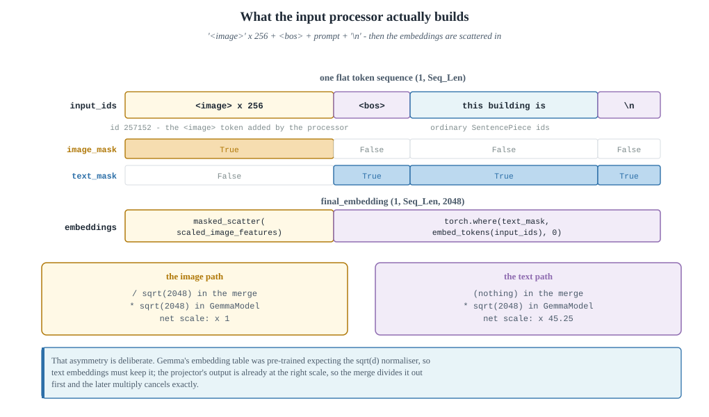
The image branch
Six operations, in a fixed order:
def process_images(
images: List[Image.Image],
size: Dict[str, int] = None,
resample: Image.Resampling = None,
rescale_factor: float = None,
image_mean: Optional[Union[float, List[float]]] = None,
image_std: Optional[Union[float, List[float]]] = None,
) -> List[np.ndarray]:
height, width = size[0], size[1]
images = [
resize(image=image, size=(height, width), resample=resample) for image in images
]
# Convert each image to a numpy array
images = [np.array(image) for image in images]
# Rescale the pixel values to be in the range [0, 1]
images = [rescale(image, scale=rescale_factor) for image in images]
# Normalize the images to have mean 0 and standard deviation 1
images = [normalize(image, mean=image_mean, std=image_std) for image in images]
# Move the channel dimension to the first dimension. The model expects images in the format [Channel, Height, Width]
images = [image.transpose(2, 0, 1) for image in images]
return imagesAnd the two helpers that do the arithmetic:
def rescale(
image: np.ndarray, scale: float, dtype: np.dtype = np.float32
) -> np.ndarray:
rescaled_image = image * scale
rescaled_image = rescaled_image.astype(dtype)
return rescaled_image
def normalize(
image: np.ndarray,
mean: Union[float, Iterable[float]],
std: Union[float, Iterable[float]],
) -> np.ndarray:
mean = np.array(mean, dtype=image.dtype)
std = np.array(std, dtype=image.dtype)
image = (image - mean) / std
return imageWalking the pipeline with shapes:
\[ (H, W, 3)_{\text{uint8}} \;\xrightarrow{\text{resize}}\; (224, 224, 3) \;\xrightarrow{\times \frac{1}{255}}\; [0, 1] \;\xrightarrow{\frac{x - 0.5}{0.5}}\; [-1, 1] \] \[ \;\xrightarrow{\text{transpose}}\; (3, 224, 224) \;\xrightarrow{\text{stack}}\; (1, 3, 224, 224) \]Three of these deserve comment.
resample=Image.Resampling.BICUBIC
Not nearest, not bilinear, not Lanczos. Downsampling filters differ in how much high-frequency detail they preserve and how much ringing they introduce, and the encoder was trained on whatever the original pipeline produced. Swapping the filter is a small, systematic distribution shift applied to every image you ever run — measurable, and entirely avoidable.
mean = std = 0.5, not the ImageNet statistics
Almost every vision pipeline you have read normalises with ImageNet's per-channel
values, mean=[0.485, 0.456, 0.406],
std=[0.229, 0.224, 0.225]. SigLIP does not. With
\(\mu = \sigma = 0.5\) the transform is
which simply maps \([0, 1]\) onto \([-1, 1]\), identically for all three channels. No dataset statistics are involved at all. Use the ImageNet numbers here and every pixel is wrong by a channel-dependent offset.
transpose(2, 0, 1)
\((H, W, C) \rightarrow (C, H, W)\). PIL and NumPy think of an image as a grid of pixels, each with three channels. PyTorch convolutions think of it as three planes. This is pure layout bookkeeping, and getting it wrong gives you a tensor of exactly the right size whose "channels" are actually rows.
The text branch
Now the string, which is where it gets genuinely odd:
def add_image_tokens_to_prompt(prefix_prompt, bos_token, image_seq_len, image_token):
# Quoting from the blog (https://huggingface.co/blog/paligemma#detailed-inference-process):
# The input text is tokenized normally.
# A <bos> token is added at the beginning, and an additional newline token (\n) is appended.
# This newline token is an essential part of the input prompt the model was trained with, so adding it explicitly ensures it's always there.
# The tokenized text is also prefixed with a fixed number of <image> tokens.
# NOTE: from the paper it looks like the `\n` should be tokenized separately, but in the HF implementation this is not done.
# ref to HF implementation: https://github.com/huggingface/transformers/blob/7f79a97399bb52aad8460e1da2f36577d5dccfed/src/transformers/models/paligemma/processing_paligemma.py#L55-L73
return f"{image_token * image_seq_len}{bos_token}{prefix_prompt}\n"That one f-string builds:
<image><image> ... <image> <bos> this building is \n
└────────── 256 copies ─────────┘ ↑ ↑ ↑
│ └─ the prompt └─ the prefix/suffix separator
└─ "beginning of sequence", *after* the image
Three things are happening, and two of them look like bugs.
We insert \(256\) copies of a string. The tokenizer maps them to \(256\)
copies of one token id, which nn.Embedding then maps to \(256\)
copies of one meaningless vector.
They are reserved seats. Their only job is to make the sequence
the right length and to be findable later, so that the merge step can overwrite
them with the real projected patch vectors. Nothing downstream ever reads the
<image> embedding itself.
<bos> comes after the image
"Beginning of sequence" is not at the beginning. This is deliberate: the image is
not part of the text, it is context that exists before the text starts.
<bos> marks where the language begins.
Note the two lines in __init__ that make this work:
tokenizer.add_bos_token = False tokenizer.add_eos_token = False
We disable the tokenizer's automatic special tokens precisely so that we can
place <bos> ourselves, in the middle.
\n is load-bearing
Every prompt gets a newline appended. It looks like cosmetic formatting. It is
not: during pre-training, \n was the separator between the
prefix and the suffix — between the question and the answer.
So the newline is the model's signal that the prompt is finished and generation starts now. Omit it and you are feeding the model a sequence shaped unlike anything it ever saw, and quality degrades in the confusing, non-obvious way that distribution shift always does.
The comment in the source flags a real discrepancy here, and it is worth reading:
# NOTE: from the paper it looks like the `\n` should be tokenized separately, # but in the HF implementation this is not done.
Because the newline is concatenated into the string before tokenisation,
SentencePiece may merge it with the preceding characters into a single token
rather than emitting a standalone \n. We match the Hugging Face
behaviour, because matching the reference implementation is what makes the
weights produce the reference outputs.
Extending the tokenizer
The constructor adds \(1153\) tokens to the vocabulary:
def __init__(self, tokenizer, num_image_tokens: int, image_size: int):
super().__init__()
self.image_seq_length = num_image_tokens
self.image_size = image_size
# Tokenizer described here: https://github.com/google-research/big_vision/blob/main/big_vision/configs/proj/paligemma/README.md#tokenizer
tokens_to_add = {"additional_special_tokens": [self.IMAGE_TOKEN]}
tokenizer.add_special_tokens(tokens_to_add)
EXTRA_TOKENS = [
f"<loc{i:04d}>" for i in range(1024)
] # These tokens are used for object detection (bounding boxes)
EXTRA_TOKENS += [
f"<seg{i:03d}>" for i in range(128)
] # These tokens are used for object segmentation
tokenizer.add_tokens(EXTRA_TOKENS)
self.image_token_id = tokenizer.convert_tokens_to_ids(self.IMAGE_TOKEN)
# We will add the BOS and EOS tokens ourselves
tokenizer.add_bos_token = False
tokenizer.add_eos_token = False
self.tokenizer = tokenizerThree groups:
<image>— one placeholder token, added as a special token so the tokenizer never splits it into pieces.<loc0000>…<loc1023>— \(1024\) tokens for object detection. A coordinate is quantised onto a \(1024\)-bin grid along each axis, so a bounding box is four of these tokens and detection becomes a text generation problem.<seg000>…<seg127>— \(128\) tokens for segmentation, which index into the codebook of a separately trained VQ-VAE that decodes them back into a mask.
This is the mechanism behind the claim in the previous section: every task, including the dense spatial ones, has been reduced to predicting the next token. The architecture needs no task-specific heads because the vocabulary carries the task structure instead.
And then __call__ ties the two branches together:
def __call__(
self,
text: List[str],
images: List[Image.Image],
padding: str = "longest",
truncation: bool = True,
) -> dict:
assert len(images) == 1 and len(text) == 1, f"Received {len(images)} images for {len(text)} prompts."
pixel_values = process_images(
images,
size=(self.image_size, self.image_size),
resample=Image.Resampling.BICUBIC,
rescale_factor=1 / 255.0,
image_mean=IMAGENET_STANDARD_MEAN,
image_std=IMAGENET_STANDARD_STD,
)
# Convert the list of numpy arrays to a single numpy array with shape [Batch_Size, Channel, Height, Width]
pixel_values = np.stack(pixel_values, axis=0)
# Convert the numpy array to a PyTorch tensor
pixel_values = torch.tensor(pixel_values)
# Prepend a `self.image_seq_length` number of image tokens to the prompt
input_strings = [
add_image_tokens_to_prompt(
prefix_prompt=prompt,
bos_token=self.tokenizer.bos_token,
image_seq_len=self.image_seq_length,
image_token=self.IMAGE_TOKEN,
)
for prompt in text
]
# Returns the input_ids and attention_mask as PyTorch tensors
inputs = self.tokenizer(
input_strings,
return_tensors="pt",
padding=padding,
truncation=truncation,
)
return_data = {"pixel_values": pixel_values, **inputs}
return return_dataassert len(images) == 1 and len(text) == 1. This
implementation handles one image and one prompt, full stop. That restriction is what
lets the attention mask be trivial — no padding means no mask — and we'll see the
matching assert on the model side shortly. It is an honest constraint,
stated loudly, rather than a half-working batched path.
Merging the Image into the Prompt
We now have:
image_features— \((1, 256, 2048)\) from the vision tower and the projector,inputs_embeds— \((1, \text{Seq\_Len}, 2048)\) fromembed_tokens(input_ids), including \(256\) junk vectors where the<image>placeholders are.
The job is to overwrite the junk with the real thing, and to produce the mask and
position ids the decoder needs. That is
_merge_input_ids_with_image_features:
def _merge_input_ids_with_image_features(
self, image_features: torch.Tensor, inputs_embeds: torch.Tensor, input_ids: torch.Tensor, attention_mask: torch.Tensor, kv_cache: Optional[KVCache] = None
):
_, _, embed_dim = image_features.shape
batch_size, sequence_length = input_ids.shape
dtype, device = inputs_embeds.dtype, inputs_embeds.device
# Shape: [Batch_Size, Seq_Len, Hidden_Size]
scaled_image_features = image_features / (self.config.hidden_size**0.5)
# Combine the embeddings of the image tokens, the text tokens and mask out all the padding tokens.
final_embedding = torch.zeros(batch_size, sequence_length, embed_dim, dtype=inputs_embeds.dtype, device=inputs_embeds.device)
# Shape: [Batch_Size, Seq_Len]. True for text tokens
text_mask = (input_ids != self.config.image_token_index) & (input_ids != self.pad_token_id)
# Shape: [Batch_Size, Seq_Len]. True for image tokens
image_mask = input_ids == self.config.image_token_index
# Shape: [Batch_Size, Seq_Len]. True for padding tokens
pad_mask = input_ids == self.pad_token_id
# We need to expand the masks to the embedding dimension otherwise we can't use them in torch.where
text_mask_expanded = text_mask.unsqueeze(-1).expand(-1, -1, embed_dim)
pad_mask_expanded = pad_mask.unsqueeze(-1).expand(-1, -1, embed_dim)
image_mask_expanded = image_mask.unsqueeze(-1).expand(-1, -1, embed_dim)
# Add the text embeddings
final_embedding = torch.where(text_mask_expanded, inputs_embeds, final_embedding)
# Insert image embeddings. We can't use torch.where because the sequence length of scaled_image_features is not equal to the sequence length of the final embedding
final_embedding = final_embedding.masked_scatter(image_mask_expanded, scaled_image_features)
# Zero out padding tokens
final_embedding = torch.where(pad_mask_expanded, torch.zeros_like(final_embedding), final_embedding)
#### CREATE THE ATTENTION MASK ####
dtype, device = inputs_embeds.dtype, inputs_embeds.device
min_dtype = torch.finfo(dtype).min
q_len = inputs_embeds.shape[1]
if kv_cache is None or kv_cache.num_items() == 0:
# Do not mask any token, because we're in the prefill phase
# This only works when we have no padding
causal_mask = torch.full(
(batch_size, q_len, q_len), fill_value=0, dtype=dtype, device=device
)
else:
# Since we are generating tokens, the query must be one single token
assert q_len == 1
kv_len = kv_cache.num_items() + q_len
# Also in this case we don't need to mask anything, since each query should be able to attend all previous tokens.
# This only works when we have no padding
causal_mask = torch.full(
(batch_size, q_len, kv_len), fill_value=0, dtype=dtype, device=device
)
# Add the head dimension
# [Batch_Size, Q_Len, KV_Len] -> [Batch_Size, Num_Heads_Q, Q_Len, KV_Len]
causal_mask = causal_mask.unsqueeze(1)
if kv_cache is not None and kv_cache.num_items() > 0:
# The position of the query is just the last position
position_ids = attention_mask.cumsum(-1)[:, -1]
if position_ids.dim() == 1:
position_ids = position_ids.unsqueeze(0)
else:
# Create a position_ids based on the size of the attention_mask
# For masked tokens, use the number 1 as position.
position_ids = (attention_mask.cumsum(-1)).masked_fill_((attention_mask == 0), 1).to(device)
return final_embedding, causal_mask, position_idstorch.where
The obvious implementation would be a single
torch.where(image_mask, image_features, inputs_embeds). It does not
work, and the comment in the source says why:
# We can't use torch.where because the sequence length of scaled_image_features # is not equal to the sequence length of the final embedding
torch.where is elementwise and requires broadcastable shapes:
final_embedding is \((1, \text{Seq\_Len}, 2048)\) while
scaled_image_features is \((1, 256, 2048)\), and
\(\text{Seq\_Len} > 256\). The shapes are not compatible.
masked_scatter is the right tool: it walks the mask, and for each
True position consumes the next element from the source
tensor. The source only needs to supply as many values as there are
Trues. That is exactly the "fill the reserved seats in order"
semantics we want.
This is the single most surprising line in the file:
scaled_image_features = image_features / (self.config.hidden_size**0.5)
Why divide the image features by \(\sqrt{2048} \approx 45.25\)? Because
GemmaModel.forward is about to multiply everything by it:
normalizer = torch.tensor(self.config.hidden_size**0.5, dtype=hidden_states.dtype) hidden_states = hidden_states * normalizer
So trace the two paths through both operations:
\[ \begin{aligned} \text{image:} &\quad \mathbf{v} \;\xrightarrow{\;/\sqrt{d}\;}\; \frac{\mathbf{v}}{\sqrt{d}} \;\xrightarrow{\;\times\sqrt{d}\;}\; \mathbf{v} &&\text{net} \times 1 \\[4pt] \text{text:} &\quad \mathbf{e} \;\xrightarrow{\quad}\; \mathbf{e} \;\xrightarrow{\;\times\sqrt{d}\;}\; \mathbf{e}\sqrt{d} &&\text{net} \times \sqrt{d} \end{aligned} \]The asymmetry is the point. Gemma's embedding table was pre-trained with the \(\sqrt{d}\) normaliser applied, so its embeddings are calibrated to be scaled up — remove it and the text tokens arrive \(45\times\) too quiet. The projector, by contrast, was trained to emit vectors already at residual-stream scale, so it must not be scaled.
Since GemmaModel applies one blanket multiply to the merged
sequence, the merge pre-divides the image half to cancel it exactly. It reads
like a bug and it is a careful piece of bookkeeping.
pad_mask exists at all
The processor asserts a batch of one, so there is never any padding, so the
pad_mask branch is dead code. It is left in because it documents
the shape of the problem: the moment you batch two prompts of different lengths,
the shorter one is padded, and those positions must be zeroed and
masked out of attention. Deleting it would make the restriction invisible.
Building the mask and the positions
The second half of the function builds causal_mask and
position_ids, and both have a prefill case and a decode case.
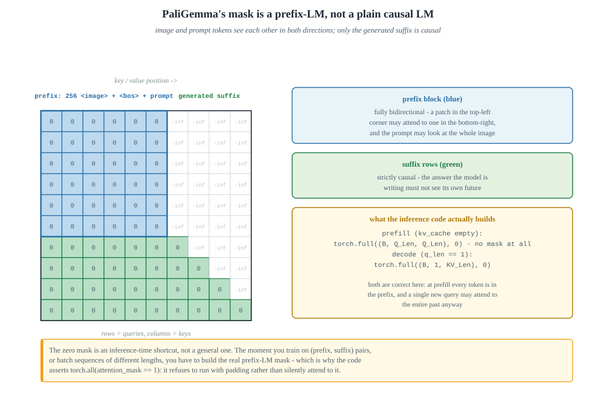
The striking thing is that the mask is all zeros in both cases. No \(-\infty\) anywhere. For a decoder-only language model that should set off alarms — so let us be careful about why it is right here and wrong in general.
(B, Q_Len, Q_Len) of zeros
At prefill the sequence is \(256\) image tokens plus the prompt — which is entirely prefix. And the prefix is supposed to be bidirectional. A zero mask is not a shortcut here; it is the correct prefix-LM mask for a sequence that contains no suffix.
(B, 1, KV_Len) of zeros
During generation \(Q\_Len = 1\) — the assert q_len == 1 enforces
it. There is exactly one query, and it is the newest token, so everything in the
cache is in its past. A causal mask for a single query at the end of the
sequence masks nothing.
Two situations, both ruled out by assertions:
- Training. You feed prefix and suffix at once, so the suffix rows genuinely need to be causal. You must build the real prefix-LM mask from the figure.
- Batching with padding. Padded positions must be masked to
\(-\infty\) or real tokens will attend to garbage. Hence
assert torch.all(attention_mask == 1)inforward— the code refuses to run rather than silently attending to padding.
Those two asserts are the contract. Within it, zeros are exact.
At prefill, attention_mask.cumsum(-1) gives the running count of
real tokens, which for an unpadded sequence is just
\([1, 2, 3, \dots, \text{Seq\_Len}]\). At decode we want only the position of
the one new token, so the code takes the last element,
cumsum(-1)[:, -1].
This matters more than it looks, because RoPE — next section but one — takes
position_ids as its input. Feed a decode step the position
\(0\) instead of \(312\) and the model will rotate the new query as though it
were the first token in the sequence.
And the top-level forward
With the merge written, the whole multimodal forward pass is six lines:
def forward(
self,
input_ids: torch.LongTensor = None,
pixel_values: torch.FloatTensor = None,
attention_mask: Optional[torch.Tensor] = None,
kv_cache: Optional[KVCache] = None,
) -> Tuple:
# Make sure the input is right-padded
assert torch.all(attention_mask == 1), "The input cannot be padded"
# 1. Extra the input embeddings
# shape: (Batch_Size, Seq_Len, Hidden_Size)
inputs_embeds = self.language_model.get_input_embeddings()(input_ids)
# 2. Merge text and images
# [Batch_Size, Channels, Height, Width] -> [Batch_Size, Num_Patches, Embed_Dim]
selected_image_feature = self.vision_tower(pixel_values.to(inputs_embeds.dtype))
# [Batch_Size, Num_Patches, Embed_Dim] -> [Batch_Size, Num_Patches, Hidden_Size]
image_features = self.multi_modal_projector(selected_image_feature)
# Merge the embeddings of the text tokens and the image tokens
inputs_embeds, attention_mask, position_ids = self._merge_input_ids_with_image_features(image_features, inputs_embeds, input_ids, attention_mask, kv_cache)
outputs = self.language_model(
attention_mask=attention_mask,
position_ids=position_ids,
inputs_embeds=inputs_embeds,
kv_cache=kv_cache,
)
return outputsRead it as: embed the text, encode the image, project, merge, run the decoder. Every one of those steps is something we have now built or are about to.
Coding Gemma
The decoder is where the interesting engineering is. Structurally it is the decoder from the Transformer chapter, but almost every component has been replaced with a newer one:
| Component | Transformer (2017) | Gemma (2024) |
|---|---|---|
| normalisation | LayerNorm, post-norm | RMSNorm, pre-norm |
| position | additive sinusoids | RoPE, inside attention |
| attention | MHA (8 Q, 8 KV) | MQA (8 Q, 1 KV) |
| MLP | ReLU, 2 matrices | GeGLU, 3 matrices |
| output head | separate projection | tied to the embeddings |
| cross-attention | yes | none |
We did RMSNorm in the normalisation section. Let's take the other four.
GemmaConfig
As before, the hyperparameters first — and this time two of the fields are new:
class GemmaConfig():
def __init__(
self,
vocab_size,
hidden_size,
intermediate_size,
num_hidden_layers,
num_attention_heads,
num_key_value_heads,
head_dim=256,
max_position_embeddings=8192,
rms_norm_eps=1e-6,
rope_theta=10000.0,
attention_bias=False,
attention_dropout=0.0,
pad_token_id=None,
**kwargs,
):
super().__init__()
self.vocab_size = vocab_size
self.max_position_embeddings = max_position_embeddings
self.hidden_size = hidden_size
self.intermediate_size = intermediate_size
self.num_hidden_layers = num_hidden_layers
self.num_attention_heads = num_attention_heads
self.head_dim = head_dim
self.num_key_value_heads = num_key_value_heads
self.rms_norm_eps = rms_norm_eps
self.rope_theta = rope_theta
self.attention_bias = attention_bias
self.attention_dropout = attention_dropout
self.pad_token_id = pad_token_idnum_key_value_heads is separate from
num_attention_heads, which is the entire grouped-query mechanism
expressed as a config field. And rope_theta=10000.0 is the base of the
rotary frequencies.
Note also that head_dim=256 is given explicitly rather than
derived as hidden_size // num_attention_heads. For Gemma-2B that
division would give \(2048/8 = 256\), so it agrees here — but Gemma decouples them
on purpose, so that head count and head width can be tuned independently. Which is
why q_proj outputs num_heads * head_dim rather than
hidden_size: in general those are not the same number.
Rotary Positional Embeddings
The original Transformer added a positional vector to the embedding, once, at the bottom of the stack:
\[ \mathbf{h}^{(0)} = \mathbf{e} + \mathbf{p} \]It works, but it has two real problems.
1. Position and content get entangled. We add \(\mathbf{p}\) into the same vector space that carries meaning, and then every subsequent layer has to work with the sum. Expand a single attention score:
\[ (\mathbf{e}_i + \mathbf{p}_i)^{\mathsf{T}} W_Q^{\mathsf{T}} W_K (\mathbf{e}_j + \mathbf{p}_j) \]Multiply that out and you get four terms: content-content, content-position, position-content, and position-position. Only the first is what we actually wanted; the other three are cross-talk the model has to learn to live with.
2. It decays with depth. \(\mathbf{p}\) is injected once and then survives only through \(27\) residual additions and normalisations. By the last layer the positional signal is whatever is left of it.
RoPE's answer is to stop adding position and start rotating by it — applied to \(Q\) and \(K\) directly, inside every attention layer.
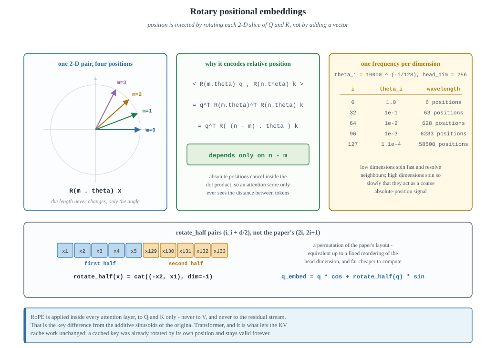
The Core Idea
Take the \(256\)-dimensional head and read it as \(128\) independent \(2\)-D planes. In the plane indexed by \(i\), rotate by an angle proportional to the token's position \(m\):
\[ R(m\theta_i) = \begin{bmatrix} \cos m\theta_i & -\sin m\theta_i \\ \sin m\theta_i & \cos m\theta_i \end{bmatrix} \]with a different rate per plane:
\[ \theta_i = \text{base}^{-2i/d} = 10000^{-2i/256}, \qquad i = 0, 1, \dots, 127 \]Apply this to the query and the key — never to the value, and never to the residual stream:
\[ \tilde{\mathbf{q}}_m = R(m\theta)\,\mathbf{q}_m, \qquad \tilde{\mathbf{k}}_n = R(n\theta)\,\mathbf{k}_n \]Because a rotation is orthogonal, \(\|\tilde{\mathbf{q}}\| = \|\mathbf{q}\|\). No information is added or destroyed — the vector is only turned.
Why This Works
This is the whole result. Compute the attention score between a query at position \(m\) and a key at position \(n\):
\[ \begin{aligned} \langle \tilde{\mathbf{q}}_m, \tilde{\mathbf{k}}_n \rangle &= \left(R(m\theta)\mathbf{q}\right)^{\mathsf{T}} \left(R(n\theta)\mathbf{k}\right) \\[4pt] &= \mathbf{q}^{\mathsf{T}} R(m\theta)^{\mathsf{T}} R(n\theta)\,\mathbf{k} \\[4pt] &= \mathbf{q}^{\mathsf{T}} R(-m\theta) R(n\theta)\,\mathbf{k} &&\text{(rotations: } R^{\mathsf{T}} = R^{-1}) \\[4pt] &= \mathbf{q}^{\mathsf{T}} R\big((n - m)\theta\big)\,\mathbf{k} &&\text{(rotations compose by adding angles)} \end{aligned} \]The absolute positions \(m\) and \(n\) have cancelled. The score depends only on \(n - m\), the distance between the tokens.
That is a remarkable property to get for free. We injected absolute position, and the geometry of rotation converted it into relative position inside the dot product — with no learned relative-position table and no extra parameters.
The four-term cross-talk from the additive scheme is gone, because we never added anything. \(\mathbf{q}\) still means exactly what it meant; it has simply been rotated. And since the rotation is applied fresh in every layer, the positional signal cannot decay with depth.
The per-plane rates span an enormous range. With \(d = 256\) and base \(= 10000\):
\[ \theta_0 = 1, \qquad \theta_{127} = 10000^{-127/128} \approx 1.07 \times 10^{-4} \]and a plane with rate \(\theta_i\) completes a full turn every \(2\pi/\theta_i\) positions:
| \(i\) | \(\theta_i\) | wavelength |
|---|---|---|
| 0 | \(1.0\) | \(\approx 6\) positions |
| 32 | \(10^{-1}\) | \(\approx 63\) positions |
| 64 | \(10^{-2}\) | \(\approx 628\) positions |
| 127 | \(1.07 \times 10^{-4}\) | \(\approx 58{,}500\) positions |
So the low dimensions spin fast and let the model resolve immediate neighbours, while the high dimensions barely move across the whole context and behave like a coarse absolute-position signal. It is a positional encoding at every scale at once — and it is the same \(10000\) base, for the same reason, as the sinusoids in the previous chapter.
Nobody builds a \(256 \times 256\) block-diagonal rotation matrix. The matrix is almost all zeros, and the multiplication reduces to elementwise arithmetic:
class GemmaRotaryEmbedding(nn.Module):
def __init__(self, dim, max_position_embeddings=2048, base=10000, device=None):
super().__init__()
self.dim = dim # it is set to the head_dim
self.max_position_embeddings = max_position_embeddings
self.base = base
# Calculate the theta according to the formula theta_i = base^(-2i/dim) where i = 0, 1, 2, ..., dim // 2
inv_freq = 1.0 / (self.base ** (torch.arange(0, self.dim, 2, dtype=torch.int64).float() / self.dim))
self.register_buffer("inv_freq", tensor=inv_freq, persistent=False)
@torch.no_grad()
def forward(self, x, position_ids, seq_len=None):
# x: [bs, num_attention_heads, seq_len, head_size]
self.inv_freq.to(x.device)
# Copy the inv_freq tensor for batch in the sequence
# inv_freq_expanded: [Batch_Size, Head_Dim // 2, 1]
inv_freq_expanded = self.inv_freq[None, :, None].float().expand(position_ids.shape[0], -1, 1)
# position_ids_expanded: [Batch_Size, 1, Seq_Len]
position_ids_expanded = position_ids[:, None, :].float()
device_type = x.device.type
device_type = device_type if isinstance(device_type, str) and device_type != "mps" else "cpu"
with torch.autocast(device_type=device_type, enabled=False):
# Multiply each theta by the position (which is the argument of the sin and cos functions)
# freqs: [Batch_Size, Head_Dim // 2, 1] @ [Batch_Size, 1, Seq_Len] --> [Batch_Size, Seq_Len, Head_Dim // 2]
freqs = (inv_freq_expanded.float() @ position_ids_expanded.float()).transpose(1, 2)
# emb: [Batch_Size, Seq_Len, Head_Dim]
emb = torch.cat((freqs, freqs), dim=-1)
# cos, sin: [Batch_Size, Seq_Len, Head_Dim]
cos = emb.cos()
sin = emb.sin()
return cos.to(dtype=x.dtype), sin.to(dtype=x.dtype)The inv_freq line is \(\theta_i\) straight from the formula:
inv_freq = 1.0 / (self.base ** (torch.arange(0, self.dim, 2).float() / self.dim))
arange(0, 256, 2) gives \([0, 2, 4, \dots, 254]\), so the exponent is
\(2i/d\) — \(128\) rates for \(128\) planes.
Then the outer product with the positions:
\[ (1, 128, 1) \times (1, 1, L) \rightarrow (1, 128, L) \;\xrightarrow{\text{transpose}}\; (1, L, 128) \]and torch.cat((freqs, freqs), dim=-1) duplicates it to \(256\),
because each angle is needed by both halves of its plane.
with torch.autocast(..., enabled=False).
The angles must be computed in full precision. In bf16 a position index of
\(312\) multiplied by \(\theta_{127} \approx 10^{-4}\) would lose most of its
significant digits, and the slow dimensions — the ones carrying long-range
position — would degrade to noise. Disabling autocast here is not paranoia.
rotate_half: a permuted but equivalent layout
def rotate_half(x):
# Build the [-x2, x1, -x4, x3, ...] tensor for the sin part of the positional encoding.
x1 = x[..., : x.shape[-1] // 2] # Takes the first half of the last dimension
x2 = x[..., x.shape[-1] // 2 :] # Takes the second half of the last dimension
return torch.cat((-x2, x1), dim=-1)
def apply_rotary_pos_emb(q, k, cos, sin, unsqueeze_dim=1):
cos = cos.unsqueeze(unsqueeze_dim) # Add the head dimension
sin = sin.unsqueeze(unsqueeze_dim) # Add the head dimension
# Apply the formula (34) of the Rotary Positional Encoding paper.
q_embed = (q * cos) + (rotate_half(q) * sin)
k_embed = (k * cos) + (rotate_half(k) * sin)
return q_embed, k_embedWritten out, rotating the plane \((x_1, x_2)\) by \(\alpha\) is
\[ \begin{aligned} x_1' &= x_1\cos\alpha - x_2\sin\alpha \\ x_2' &= x_2\cos\alpha + x_1\sin\alpha \end{aligned} \]which is exactly
\[ \mathbf{x}' = \mathbf{x}\odot\cos\alpha + \text{rotate\_half}(\mathbf{x})\odot\sin\alpha \]if rotate_half produces \((-x_2, x_1)\) for each plane.
Here is the subtlety. The paper pairs adjacent dimensions:
\((x_0, x_1), (x_2, x_3), \dots\). The code pairs the halves:
\((x_0, x_{128}), (x_1, x_{129}), \dots\) — it splits the vector down the middle
and concatenates (-second_half, first_half).
Those are different functions of the same input. They are also equivalent as
models, because the difference is a fixed permutation of the head
dimension, and the layer that produced \(Q\) and \(K\) is a learned linear map
that can absorb any fixed permutation of its output. The halves version is two
slices and one cat instead of an interleave, so it is what every
implementation uses — but the weights are only interchangeable with another
implementation that made the same choice.
Grouped-Query Attention
Standard multi-head attention gives every query head its own key and value head. For \(h = 8\) heads that is \(8\) separate \(K\) and \(V\) projections.
During training this costs nothing worth mentioning. During generation it is the dominant cost — not in FLOPs, but in memory bandwidth.
Here is the asymmetry that drives the whole design. At each decode step we process exactly one token, so there is very little arithmetic to do. But we must read the entire KV cache from memory to attend over it. The ratio of bytes moved to FLOPs performed is terrible, and the GPU spends the step waiting on memory. Decoding is memory-bandwidth bound, so the lever that actually matters is the size of the cache.
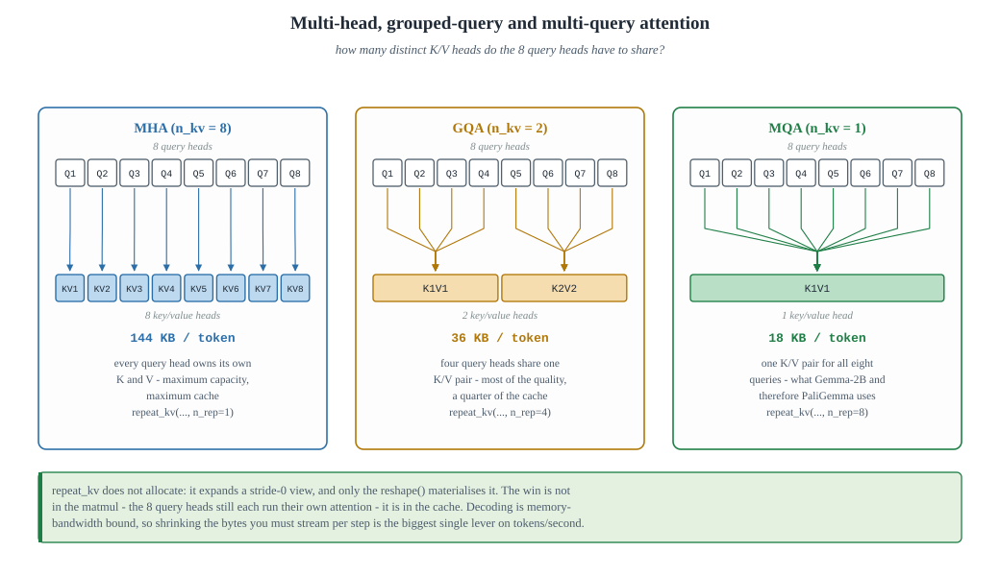
The spectrum
Let \(h\) be the number of query heads and \(h_{kv}\) the number of key/value heads. The cache size per token, per layer, is
\[ 2 \cdot h_{kv} \cdot d_{\text{head}} \cdot \text{bytes} \]Three points on the spectrum:
- MHA: \(h_{kv} = h\). Maximum capacity, maximum cache.
- GQA: \(1 < h_{kv} < h\). Query heads are partitioned into \(h_{kv}\) groups; each group shares one \(K/V\) pair.
- MQA: \(h_{kv} = 1\). All query heads share a single \(K/V\).
MQA and MHA are the endpoints of GQA, not separate mechanisms — which is why one
implementation with one n_rep parameter covers all three.
For PaliGemma's decoder:
# google/paligemma-3b-pt-224 checkpoint:
{
"hidden_size": 2048,
"intermediate_size": 16384,
"num_hidden_layers": 18,
"num_attention_heads": 8, # Q heads
"num_key_value_heads": 1, # K/V heads -> n_rep = 8, i.e. pure MQA
"head_dim": 256,
}So \(h = 8\), \(h_{kv} = 1\): Gemma-2B is pure MQA. Putting numbers on the cache, in bf16 across all \(18\) layers:
\[ \begin{aligned} \text{MHA} &: 2 \times 18 \times 8 \times 256 \times 2\,\text{B} = 144\,\text{KB per token} \\ \text{MQA} &: 2 \times 18 \times 1 \times 256 \times 2\,\text{B} = 18\,\text{KB per token} \end{aligned} \]Over a \(1024\)-token context that is \(144\) MB versus \(18\) MB — an \(8\times\) reduction in the bytes that must be streamed on every single decode step.
The implementation falls straight out of the definition — \(Q\) gets \(h\) heads and \(K, V\) get \(h_{kv}\):
class GemmaAttention(nn.Module):
def __init__(self, config: GemmaConfig, layer_idx: Optional[int] = None):
super().__init__()
self.config = config
self.layer_idx = layer_idx
self.attention_dropout = config.attention_dropout
self.hidden_size = config.hidden_size
self.num_heads = config.num_attention_heads
self.head_dim = config.head_dim
self.num_key_value_heads = config.num_key_value_heads
self.num_key_value_groups = self.num_heads // self.num_key_value_heads
self.max_position_embeddings = config.max_position_embeddings
self.rope_theta = config.rope_theta
self.is_causal = True
assert self.hidden_size % self.num_heads == 0
self.q_proj = nn.Linear(self.hidden_size, self.num_heads * self.head_dim, bias=config.attention_bias)
self.k_proj = nn.Linear(self.hidden_size, self.num_key_value_heads * self.head_dim, bias=config.attention_bias)
self.v_proj = nn.Linear(self.hidden_size, self.num_key_value_heads * self.head_dim, bias=config.attention_bias)
self.o_proj = nn.Linear(self.num_heads * self.head_dim, self.hidden_size, bias=config.attention_bias)
self.rotary_emb = GemmaRotaryEmbedding(
self.head_dim,
max_position_embeddings=self.max_position_embeddings,
base=self.rope_theta,
)Look at the output widths:
\[ \begin{aligned} W_Q &: 2048 \rightarrow 8 \times 256 = 2048 \\ W_K &: 2048 \rightarrow 1 \times 256 = 256 \\ W_V &: 2048 \rightarrow 1 \times 256 = 256 \end{aligned} \]\(W_K\) and \(W_V\) are \(8\times\) smaller than in MHA. That is where the cache saving comes from — we are not compressing the cache, we are simply producing less of it.
And num_key_value_groups = num_heads // num_key_value_heads is the
\(n_{\text{rep}}\) that the next function needs.
repeat_kv: broadcasting without allocating
def repeat_kv(hidden_states: torch.Tensor, n_rep: int) -> torch.Tensor:
batch, num_key_value_heads, slen, head_dim = hidden_states.shape
if n_rep == 1:
return hidden_states
hidden_states = hidden_states[:, :, None, :, :].expand(batch, num_key_value_heads, n_rep, slen, head_dim)
return hidden_states.reshape(batch, num_key_value_heads * n_rep, slen, head_dim)The attention matmul needs \(Q\) and \(K\) to agree on the head axis, so the single \(K/V\) head has to be presented \(8\) times:
\[ (1, 1, L, 256) \;\rightarrow\; (1, 8, L, 256) \]The two-line body is doing something careful:
hidden_states[:, :, None, :, :]inserts a size-\(1\) axis..expand(..., n_rep, ...)stretches it to \(n_{\text{rep}}\) without copying —expandproduces a view with stride \(0\) on the new axis, so all \(8\) "copies" are the same memory..reshape(...)then merges the two head axes — and this is the step that materialises the data, because a stride-\(0\) axis cannot be folded into a real one.
And the early return if n_rep == 1 is the MHA case: nothing to
repeat, so skip the copy entirely.
def forward(
self,
hidden_states: torch.Tensor,
attention_mask: Optional[torch.Tensor] = None,
position_ids: Optional[torch.LongTensor] = None,
kv_cache: Optional[KVCache] = None,
**kwargs,
) -> Tuple[torch.Tensor, Optional[torch.Tensor], Optional[Tuple[torch.Tensor]]]:
bsz, q_len, _ = hidden_states.size() # [Batch_Size, Seq_Len, Hidden_Size]
# [Batch_Size, Seq_Len, Num_Heads_Q * Head_Dim]
query_states = self.q_proj(hidden_states)
# [Batch_Size, Seq_Len, Num_Heads_KV * Head_Dim]
key_states = self.k_proj(hidden_states)
# [Batch_Size, Seq_Len, Num_Heads_KV * Head_Dim]
value_states = self.v_proj(hidden_states)
# [Batch_Size, Num_Heads_Q, Seq_Len, Head_Dim]
query_states = query_states.view(bsz, q_len, self.num_heads, self.head_dim).transpose(1, 2)
# [Batch_Size, Num_Heads_KV, Seq_Len, Head_Dim]
key_states = key_states.view(bsz, q_len, self.num_key_value_heads, self.head_dim).transpose(1, 2)
# [Batch_Size, Num_Heads_KV, Seq_Len, Head_Dim]
value_states = value_states.view(bsz, q_len, self.num_key_value_heads, self.head_dim).transpose(1, 2)
# [Batch_Size, Seq_Len, Head_Dim], [Batch_Size, Seq_Len, Head_Dim]
cos, sin = self.rotary_emb(value_states, position_ids, seq_len=None)
# [Batch_Size, Num_Heads_Q, Seq_Len, Head_Dim], [Batch_Size, Num_Heads_KV, Seq_Len, Head_Dim]
query_states, key_states = apply_rotary_pos_emb(query_states, key_states, cos, sin)
if kv_cache is not None:
key_states, value_states = kv_cache.update(key_states, value_states, self.layer_idx)
# Repeat the key and values to match the number of heads of the query
key_states = repeat_kv(key_states, self.num_key_value_groups)
value_states = repeat_kv(value_states, self.num_key_value_groups)
# Perform the calculation as usual, Q * K^T / sqrt(head_dim). Shape: [Batch_Size, Num_Heads_Q, Seq_Len_Q, Seq_Len_KV]
attn_weights = torch.matmul(query_states, key_states.transpose(2, 3)) / math.sqrt(self.head_dim)
assert attention_mask is not None
attn_weights = attn_weights + attention_mask
# Apply the softmax
# [Batch_Size, Num_Heads_Q, Seq_Len_Q, Seq_Len_KV]
attn_weights = nn.functional.softmax(attn_weights, dim=-1, dtype=torch.float32).to(query_states.dtype)
# Apply the dropout
attn_weights = nn.functional.dropout(attn_weights, p=self.attention_dropout, training=self.training)
# Multiply by the values. [Batch_Size, Num_Heads_Q, Seq_Len_Q, Seq_Len_KV] x [Batch_Size, Num_Heads_KV, Seq_Len_KV, Head_Dim] -> [Batch_Size, Num_Heads_Q, Seq_Len_Q, Head_Dim]
attn_output = torch.matmul(attn_weights, value_states)
if attn_output.size() != (bsz, self.num_heads, q_len, self.head_dim):
raise ValueError(
f"`attn_output` should be of size {(bsz, self.num_heads, q_len, self.head_dim)}, but is"
f" {attn_output.size()}"
)
# Make sure the sequence length is the second dimension. # [Batch_Size, Num_Heads_Q, Seq_Len_Q, Head_Dim] -> [Batch_Size, Seq_Len_Q, Num_Heads_Q, Head_Dim]
attn_output = attn_output.transpose(1, 2).contiguous()
# Concatenate all the heads together. [Batch_Size, Seq_Len_Q, Num_Heads_Q, Head_Dim] -> [Batch_Size, Seq_Len_Q, Num_Heads_Q * Head_Dim]
attn_output = attn_output.view(bsz, q_len, -1)
# Multiply by W_o. [Batch_Size, Seq_Len_Q, Hidden_Size]
attn_output = self.o_proj(attn_output)
return attn_output, attn_weightsSix phases, and the order of three of them is not negotiable:
- Project and reshape. \(Q\) to \((1, 8, L, 256)\), \(K\) and \(V\) to \((1, 1, L, 256)\).
- Apply RoPE to \(Q\) and \(K\). Note before the cache update — so the keys are stored already rotated.
- Update the cache and get back the full history.
- Repeat \(K, V\) up to \(8\) heads.
- Attend: \(\text{softmax}\!\left(QK^{\mathsf{T}}/\sqrt{256} + \text{mask}\right)V\).
- Merge heads and apply \(W_O\).
This ordering is the single most important line-level detail in the file.
RoPE rotates a key by its own position. Rotate before caching, and a cached key is a finished object — its rotation was correct when it was computed and remains correct for every future step. The cache is immutable and append-only.
Rotate after reading from the cache, and you would re-rotate every historical key on every step: \(O(L)\) wasted work per token, and you would have to be careful to use each key's original position rather than the current one. Get that wrong and the model's sense of position quietly drifts as the sequence grows.
Also note assert attention_mask is not None followed by
attn_weights = attn_weights + attention_mask. Additive masking,
exactly as in the previous chapter: \(0\) to keep a position and \(-\infty\) to
drop it, added before the softmax so that \(e^{-\infty} = 0\).
The KV Cache
We have mentioned the cache half a dozen times. Here is what it actually is, and why generation is unusable without it.
Autoregressive decoding looks like this:
\[ \begin{aligned} \text{step 1}&: \quad [x_1, \dots, x_{262}] \rightarrow x_{263} \\ \text{step 2}&: \quad [x_1, \dots, x_{263}] \rightarrow x_{264} \\ \text{step 3}&: \quad [x_1, \dots, x_{264}] \rightarrow x_{265} \end{aligned} \]The naive implementation re-runs the whole forward pass on the whole sequence every step. Generating \(T\) tokens then costs
\[ \sum_{t=1}^{T} O(t) = O(T^2) \]and that is before counting the \(O(t^2)\) attention inside each step.
But look at what is being recomputed. The key and value for token \(5\) are
\[ \mathbf{k}_5 = W_K\,\mathbf{h}_5, \qquad \mathbf{v}_5 = W_V\,\mathbf{h}_5 \]and \(\mathbf{h}_5\) depends only on tokens \(1\) through \(5\). Appending token \(263\) cannot change it — causal masking guarantees it. So \(\mathbf{k}_5\) and \(\mathbf{v}_5\) are computed identically at every step, forever.
Cache them.
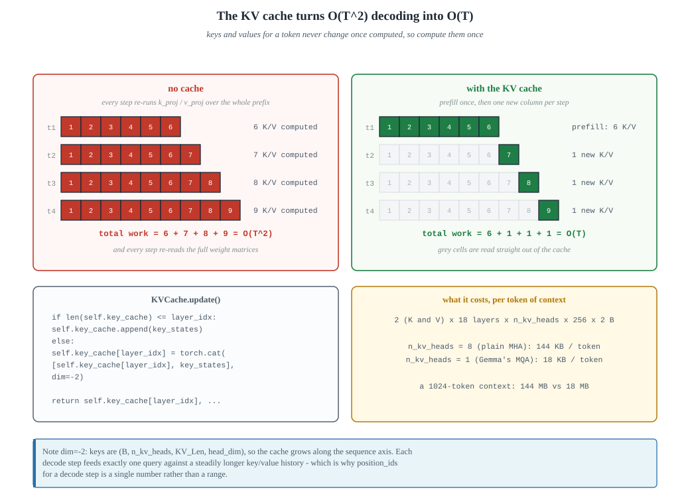
Prefill and decode
With a cache, generation splits into two phases with completely different performance characteristics:
Prefill. One forward pass over the \(262\)-token prompt. Compute all \(262\) keys and values, store them, and predict the first output token. Lots of parallel arithmetic — this phase is compute bound.
Decode. Each subsequent step feeds exactly one token:
\[ Q \in \mathbb{R}^{1 \times 256}, \qquad K, V \in \mathbb{R}^{\text{KV\_Len} \times 256} \]One new key and value are computed and appended; everything else is read from the cache. Almost no arithmetic, but the whole cache must be streamed — this phase is memory-bandwidth bound, which is the point we made in the GQA section.
Total cost drops from \(O(T^2)\) to \(O(T)\).
It is two Python lists and a torch.cat:
class KVCache():
def __init__(self) -> None:
self.key_cache: List[torch.Tensor] = []
self.value_cache: List[torch.Tensor] = []
def num_items(self) -> int:
if len(self.key_cache) == 0:
return 0
else:
# The shape of the key_cache is [Batch_Size, Num_Heads_KV, Seq_Len, Head_Dim]
return self.key_cache[0].shape[-2]
def update(
self,
key_states: torch.Tensor,
value_states: torch.Tensor,
layer_idx: int,
) -> Tuple[torch.Tensor, torch.Tensor]:
if len(self.key_cache) <= layer_idx:
# If we never added anything to the KV-Cache of this layer, let's create it.
self.key_cache.append(key_states)
self.value_cache.append(value_states)
else:
# ... otherwise we concatenate the new keys with the existing ones.
# each tensor has shape: [Batch_Size, Num_Heads_KV, Seq_Len, Head_Dim]
self.key_cache[layer_idx] = torch.cat([self.key_cache[layer_idx], key_states], dim=-2)
self.value_cache[layer_idx] = torch.cat([self.value_cache[layer_idx], value_states], dim=-2)
# ... and then we return all the existing keys + the new ones.
return self.key_cache[layer_idx], self.value_cache[layer_idx]One entry per layer, which is why update takes a
layer_idx. The if handles prefill — the list is empty,
so just store what we were given — and the else handles decode,
concatenating the new column onto the existing history.
dim=-2 is the sequence axis in
\((B, h_{kv}, \text{KV\_Len}, d_{\text{head}})\). Concatenating along the wrong
axis here is a classic bug that produces plausibly-shaped nonsense.
And num_items() reads key_cache[0].shape[-2] — the
current context length. That is what the merge step needs in order to size the
decode mask.
# inference.py - what changes between two decode steps
input_ids = next_token.unsqueeze(-1) # (1, 1) one token
attention_mask = torch.cat(
[attention_mask, torch.ones((1, 1), device=input_ids.device)], dim=-1
)
# kv_cache is *not* reset: KV_Len grows by one, Q_Len stays at oneinput_ids becomes a single token. attention_mask grows
by one. kv_cache is deliberately not reset — it is the
same object, threaded through the loop, and it is the only thing carrying state
between iterations.
We traded compute for memory, and at scale the memory becomes the new wall:
\[ \text{bytes} = 2 \cdot L_{\text{layers}} \cdot h_{kv} \cdot d_{\text{head}} \cdot \text{KV\_Len} \cdot \text{bytes/elem} \]For PaliGemma that is \(18\) KB per token — trivial for one \(1024\)-token conversation, and \(18\) GB if you want to serve \(1000\) of them concurrently. This single number is why so much inference research is about the cache: multi-query attention shrinks it, PagedAttention stops it fragmenting, quantised caches halve it, and sliding-window attention bounds it.
The MLP, the Layer, and the Model
GemmaMLP: a gated feed-forward network
The Transformer's MLP was up-project, ReLU, down-project — two matrices. Gemma uses three:
class GemmaMLP(nn.Module):
def __init__(self, config):
super().__init__()
self.config = config
self.hidden_size = config.hidden_size
self.intermediate_size = config.intermediate_size
self.gate_proj = nn.Linear(self.hidden_size, self.intermediate_size, bias=False)
self.up_proj = nn.Linear(self.hidden_size, self.intermediate_size, bias=False)
self.down_proj = nn.Linear(self.intermediate_size, self.hidden_size, bias=False)
def forward(self, x):
# Equivalent to:
# y = self.gate_proj(x) # [Batch_Size, Seq_Len, Hidden_Size] -> [Batch_Size, Seq_Len, Intermediate_Size]
# y = torch.gelu(y, approximate="tanh") # [Batch_Size, Seq_Len, Intermediate_Size]
# j = self.up_proj(x) # [Batch_Size, Seq_Len, Hidden_Size] -> [Batch_Size, Seq_Len, Intermediate_Size]
# z = y * j # [Batch_Size, Seq_Len, Intermediate_Size]
# z = self.down_proj(z) # [Batch_Size, Seq_Len, Intermediate_Size] -> [Batch_Size, Seq_Len, Hidden_Size]
return self.down_proj(nn.functional.gelu(self.gate_proj(x), approximate="tanh") * self.up_proj(x))This is GeGLU — a gated linear unit. Instead of one up-projection followed by a non-linearity, we take two independent up-projections and multiply them together elementwise, having passed one of them through GELU.
The intuition is multiplicative gating. \(W_{\text{up}}\mathbf{x}\) is the content; \(\text{GELU}(W_{\text{gate}}\mathbf{x})\) is a learned, input-dependent gate over that content, deciding per-channel how much of it survives. ReLU can only switch a channel off when its own value is negative; a gate can suppress a channel based on an entirely different projection of the input. That is strictly more expressive, and empirically GLU variants beat plain ReLU/GELU MLPs at matched parameter count.
Three matrices of course cost more than two, which is why the inner dimension is chosen to keep the parameter count comparable:
\[ 3 \times 2048 \times 16384 \approx 100\text{M} \]Note \(16384 = 8 \times 2048\) rather than the classic \(4\times\). With three matrices at \(8\times\) width, this one MLP holds about \(100\) million parameters — and multiplied across \(18\) layers it is roughly \(1.8\) billion, the large majority of the decoder. As we said in the Transformer chapter, the MLPs are where the model keeps what it knows.
GemmaDecoderLayer
Assembled, one decoder layer is the same pre-norm block as SigLIP's encoder layer — the only differences are RMSNorm instead of LayerNorm, and the extra arguments attention needs:
def forward(
self,
hidden_states: torch.Tensor,
attention_mask: Optional[torch.Tensor] = None,
position_ids: Optional[torch.LongTensor] = None,
kv_cache: Optional[KVCache] = None,
) -> Tuple[torch.FloatTensor, Optional[Tuple[torch.FloatTensor, torch.FloatTensor]]]:
residual = hidden_states
# [Batch_Size, Seq_Len, Hidden_Size]
hidden_states = self.input_layernorm(hidden_states)
# [Batch_Size, Seq_Len, Hidden_Size]
hidden_states, _, = self.self_attn(
hidden_states=hidden_states,
attention_mask=attention_mask,
position_ids=position_ids,
kv_cache=kv_cache,
)
# [Batch_Size, Seq_Len, Hidden_Size]
hidden_states = residual + hidden_states
# [Batch_Size, Seq_Len, Hidden_Size]
residual = hidden_states
# [Batch_Size, Seq_Len, Hidden_Size]
hidden_states = self.post_attention_layernorm(hidden_states)
# [Batch_Size, Seq_Len, Hidden_Size]
hidden_states = self.mlp(hidden_states)
# [Batch_Size, Seq_Len, Hidden_Size]
hidden_states = residual + hidden_states
return hidden_statesSame three-step rhythm, twice: save the residual, normalise and apply the sublayer, add the raw residual back. No cross-attention block, because there is nothing to cross-attend to — the image is already in the sequence.
GemmaModel
def forward(
self,
attention_mask: Optional[torch.Tensor] = None,
position_ids: Optional[torch.LongTensor] = None,
inputs_embeds: Optional[torch.FloatTensor] = None,
kv_cache: Optional[KVCache] = None,
) -> torch.FloatTensor:
# [Batch_Size, Seq_Len, Hidden_Size]
hidden_states = inputs_embeds
# [Batch_Size, Seq_Len, Hidden_Size]
normalizer = torch.tensor(self.config.hidden_size**0.5, dtype=hidden_states.dtype)
hidden_states = hidden_states * normalizer
for decoder_layer in self.layers:
# [Batch_Size, Seq_Len, Hidden_Size]
hidden_states = decoder_layer(
hidden_states,
attention_mask=attention_mask,
position_ids=position_ids,
kv_cache=kv_cache,
)
# [Batch_Size, Seq_Len, Hidden_Size]
hidden_states = self.norm(hidden_states)
# [Batch_Size, Seq_Len, Hidden_Size]
return hidden_statesTwo things are worth noting.
The normaliser. There is the \(\times\sqrt{2048}\) we met in the merge section — applied once, to the whole merged sequence, which is exactly why the merge had to pre-divide the image half.
Everything is threaded through. attention_mask,
position_ids and kv_cache are passed down to every layer
unchanged. The kv_cache in particular is a single mutable object shared
by all \(18\) layers, each writing to its own slot — which is why
update() needed that layer_idx.
And self.norm at the end is the final RMSNorm that every pre-norm stack
requires.
Weight Tying
The last piece of the decoder is the output head, and it brings up a trick we mentioned in passing in the Transformer chapter. It deserves a proper look, because here it accounts for a third of the model.
There are two enormous matrices in any language model:
- Input embedding \(E \in \mathbb{R}^{V \times d}\) — token id to vector.
- Output projection \(W \in \mathbb{R}^{d \times V}\) — vector to a score per token.
With \(V = 257{,}152\) and \(d = 2048\), each is about \(527\) million parameters. Gemma-2B has roughly \(2.5\) billion in total, so these two would be \(42\%\) of the model — for a \(2048\)-dimensional model whose \(18\) transformer layers together hold less.
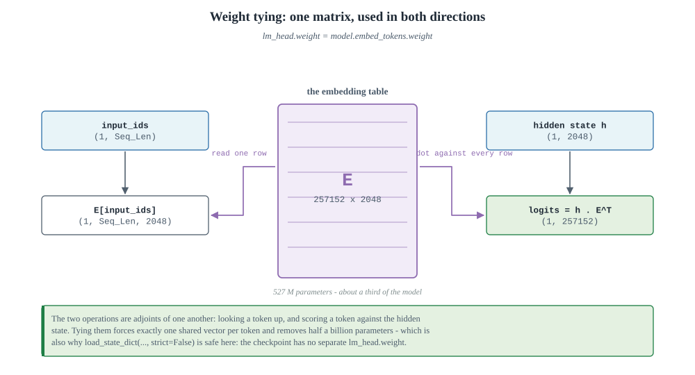
The Core Idea
Set them equal:
\[ W = E^{\mathsf{T}} \]Why is that reasonable? Because the two operations are adjoints of each other.
The input side selects a row:
\[ \mathbf{e}_{\text{token}} = E_{[\text{id}]} \]The output side scores the hidden state against every row:
\[ \text{logit}_t = \mathbf{h} \cdot E_{[t]} \]Read the second one as a similarity search. The logit for token \(t\) is the dot product of the hidden state with \(t\)'s embedding — so "predict the next token" becomes "find the token whose embedding points most nearly in the direction the model has aimed the residual stream".
That is a coherent and rather elegant story: one vector per token, used both to read the token in and to recognise it on the way out. Untying the matrices means learning two unrelated vectors for the same word and hoping they end up consistent.
# modeling_gemma.py
def tie_weights(self):
self.lm_head.weight = self.model.embed_tokens.weight
# utils.py, after the state dict is loaded
model.load_state_dict(tensors, strict=False) # no lm_head.weight in the file
model.tie_weights() # ... because it is the same tensorNote that this is not a copy. Both module attributes now point
at the same nn.Parameter object, so they share storage. During
training they also share gradients: both the embedding path and the logit path
accumulate into the same .grad.
class GemmaForCausalLM(nn.Module):
def __init__(self, config):
super().__init__()
self.config = config
self.model = GemmaModel(config)
self.vocab_size = config.vocab_size
self.lm_head = nn.Linear(config.hidden_size, config.vocab_size, bias=False)
def get_input_embeddings(self):
return self.model.embed_tokens
def tie_weights(self):
self.lm_head.weight = self.model.embed_tokens.weight
def forward(
self,
attention_mask: Optional[torch.Tensor] = None,
position_ids: Optional[torch.LongTensor] = None,
inputs_embeds: Optional[torch.FloatTensor] = None,
kv_cache: Optional[KVCache] = None,
) -> Tuple:
# input_embeds: [Batch_Size, Seq_Len, Hidden_Size]
# outputs: [Batch_Size, Seq_Len, Hidden_Size]
outputs = self.model(
attention_mask=attention_mask,
position_ids=position_ids,
inputs_embeds=inputs_embeds,
kv_cache=kv_cache,
)
hidden_states = outputs
logits = self.lm_head(hidden_states)
logits = logits.float()
return_data = {
"logits": logits,
}
if kv_cache is not None:
# Return the updated cache
return_data["kv_cache"] = kv_cache
return return_dataAnd logits = logits.float() before returning. Same argument as every
other precision cast in this chapter: the sampling code is about to softmax over
\(257{,}152\) values, and we want that reduction in fp32.
strict=False is correct here
In utils.py the weights are loaded with
model.load_state_dict(tensors, strict=False) model.tie_weights()
strict=False normally deserves suspicion — it is how you end up
silently running a half-initialised model. Here it is load-bearing: the
checkpoint contains no lm_head.weight, because in the original
model it was never a separate tensor. So the key is legitimately missing, and
tie_weights() supplies it immediately afterwards.
The ordering matters. Tie first and the subsequent
load_state_dict would overwrite
embed_tokens.weight with a fresh tensor, silently breaking the
aliasing and leaving lm_head pointing at the old, now-unused
storage.
Top-p (Nucleus) Sampling
The decoder hands us \(257{,}152\) logits. We need one token. In the Transformer chapter we surveyed the options; here we'll implement the one PaliGemma actually uses, because its three lines of index arithmetic are easy to get subtly wrong.
Recall the two failure modes:
- Greedy / argmax is deterministic and degenerate. It is prone to loops ("the the the") because if a context ever makes a token most likely, the same context will always make it most likely.
- Pure sampling from the full distribution has the opposite problem. The tail is enormous: \(257{,}152\) tokens each with probability \(10^{-6}\) still carry a quarter of the mass between them, so roughly one in four tokens is drawn from the part of the distribution the model considers essentially impossible. One such token derails everything after it.
We want to sample — but only from the part of the distribution the model believes in.
Top-k and its problem
The first idea is top-k: keep the \(k\) most probable tokens and renormalise. It works, but \(k\) is a fixed budget applied to distributions of wildly varying sharpness.
Consider two contexts, both with \(k = 40\):
- "The capital of France is ___" — the distribution is a spike. \(P(\text{Paris}) \approx 0.99\). Keeping \(40\) candidates means keeping \(39\) tokens that are flatly wrong, and sometimes sampling one.
- "My favourite colour is ___" — the distribution is genuinely broad. Hundreds of answers are reasonable, and truncating at \(40\) throws away perfectly good ones.
The fixed count is the problem. We want the cutoff to adapt to the shape of the distribution.
Top-p: a fixed mass instead of a fixed count
Sort the probabilities in descending order and keep the smallest prefix whose cumulative mass reaches \(p\):
\[ \mathcal{N}_p = \left\{1, \dots, k^*\right\}, \qquad k^* = \min\left\{k : \sum_{i=1}^{k} \hat{p}_i \ge p\right\} \]Then renormalise over that set and sample:
\[ P'(i) = \frac{\hat{p}_i}{\sum_{j \in \mathcal{N}_p} \hat{p}_j} \quad \text{for } i \in \mathcal{N}_p \]\(\mathcal{N}_p\) is the nucleus, and its size is now data-dependent. On "The capital of France is", \(P(\text{Paris}) = 0.99 \ge 0.9\) so the nucleus is a single token and sampling is effectively greedy. On "My favourite colour is", the nucleus might hold two hundred tokens. One parameter, adapting itself to each step.
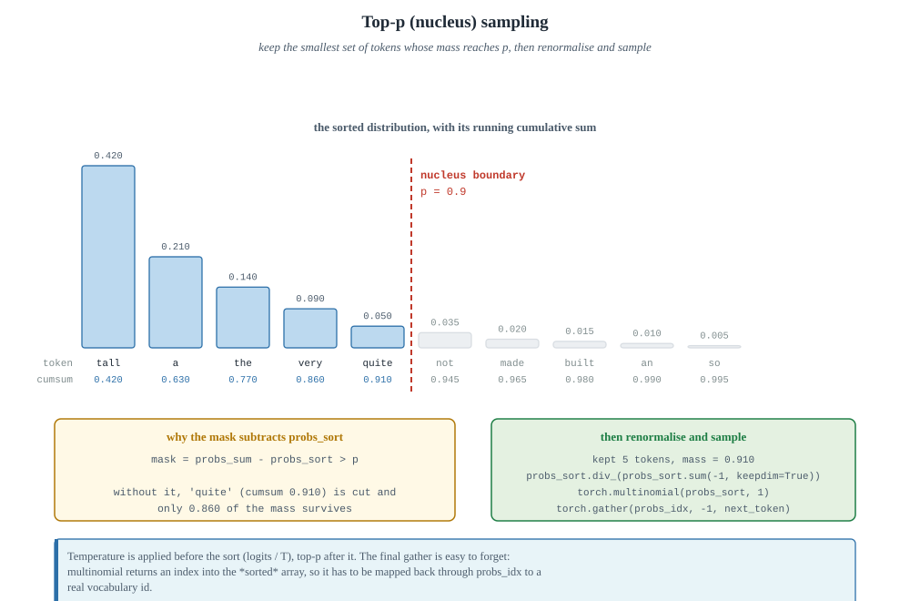
Before any of that, the logits are divided by a temperature \(T\):
\[ \hat{p}_i = \frac{\exp(z_i / T)}{\sum_j \exp(z_j / T)} \]- \(T < 1\) sharpens — the distribution concentrates on the top tokens.
- \(T = 1\) leaves the model's own distribution alone.
- \(T > 1\) flattens — more of the tail becomes reachable.
Temperature and top-p are complementary, not redundant: temperature reshapes the distribution, top-p then truncates it. The order matters — changing \(T\) changes which tokens fall inside the nucleus.
def _sample_top_p(probs: torch.Tensor, p: float):
# (B, vocab_size)
probs_sort, probs_idx = torch.sort(probs, dim=-1, descending=True)
# (B, vocab_size)
probs_sum = torch.cumsum(probs_sort, dim=-1)
# (B, vocab_size)
# (Substracting "probs_sort" shifts the cumulative sum by 1 position to the right before masking)
mask = probs_sum - probs_sort > p
# Zero out all the probabilities of tokens that are not selected by the Top P
probs_sort[mask] = 0.0
# Redistribute the probabilities so that they sum up to 1.
probs_sort.div_(probs_sort.sum(dim=-1, keepdim=True))
# Sample a token (its index) from the top p distribution
next_token = torch.multinomial(probs_sort, num_samples=1)
# Get the token position in the vocabulary corresponding to the sampled index
next_token = torch.gather(probs_idx, -1, next_token)
return next_tokenFive steps, and two of them contain the whole trick.
1. Sort descending.
torch.sort(probs, dim=-1, descending=True) returns both the sorted
values and probs_idx, the original vocabulary positions. Hold on to
that second tensor — we need it at the end.
2. Cumulative sum. probs_sum[i] is now
\(\sum_{j \le i} \hat{p}_j\).
3. The mask — and the subtraction.
mask = probs_sum - probs_sort > p
Why subtract probs_sort? Because
probs_sum[i] - probs_sort[i] is the cumulative mass
excluding token \(i\) — the mass strictly before it. So the test reads:
"drop token \(i\) only if the tokens ahead of it already covered \(p\)
without it."
That is the difference between \(\ge p\) and \(> p\) in the definition, and it decides the fate of the token that crosses the threshold. Work the example from the figure, with \(p = 0.9\):
probs_sort: 0.420 0.210 0.140 0.090 0.050 0.035 ...
probs_sum: 0.420 0.630 0.770 0.860 0.910 0.945 ...
------------------------------------------------
sum - sort: 0.000 0.420 0.630 0.770 0.860 0.910 ...
> 0.9? no no no no no YES ...
The fifth token ("quite") has probs_sum = 0.910, which is already
past \(0.9\). A naive probs_sum > p would therefore cut it — and
the surviving nucleus would hold only \(0.860\) of the mass, less than the
\(p = 0.9\) we asked for. The shifted test keeps it, giving a nucleus of
\(0.910 \ge 0.9\): the smallest prefix that reaches \(p\), exactly as
defined.
4. Zero and renormalise. probs_sort[mask] = 0.0
then an in-place div_ by the remaining sum. After this the kept
probabilities sum to \(1\) again — in the example, each is divided by
\(0.910\).
5. Sample, then map back. This is the step that is easy to forget:
next_token = torch.multinomial(probs_sort, num_samples=1) next_token = torch.gather(probs_idx, -1, next_token)
multinomial returns an index into the sorted array — a
rank, not a token. Rank \(0\) is "the most probable token", whichever that
happens to be. The gather looks that rank up in
probs_idx to recover the real vocabulary id.
Skip it and your model will emit token \(0\), \(1\), \(2\)… — a stream of the lowest ids in the vocabulary. It is a spectacular bug with a very quiet diagnosis.
_sample_top_p takes
probabilities, not logits — the caller has already applied
torch.softmax(next_token_logits / temperature, dim=-1). That is why
probs_sum can be compared against \(p\) directly: the input is
guaranteed to sum to \(1\).
The Generation Loop
Everything we have built now gets driven by one for loop:
def test_inference(
model: PaliGemmaForConditionalGeneration,
processor: PaliGemmaProcessor,
device: str,
prompt: str,
image_file_path: str,
max_tokens_to_generate: int,
temperature: float,
top_p: float,
do_sample: bool,
):
model_inputs = get_model_inputs(processor, prompt, image_file_path, device)
input_ids = model_inputs["input_ids"]
attention_mask = model_inputs["attention_mask"]
pixel_values = model_inputs["pixel_values"]
kv_cache = KVCache()
# Generate tokens until you see the stop token
stop_token = processor.tokenizer.eos_token_id
generated_tokens = []
for _ in range(max_tokens_to_generate):
# Get the model outputs
# TODO: remove the labels
outputs = model(
input_ids=input_ids,
pixel_values=pixel_values,
attention_mask=attention_mask,
kv_cache=kv_cache,
)
kv_cache = outputs["kv_cache"]
next_token_logits = outputs["logits"][:, -1, :]
# Sample the next token
if do_sample:
# Apply temperature
next_token_logits = torch.softmax(next_token_logits / temperature, dim=-1)
next_token = _sample_top_p(next_token_logits, top_p)
else:
next_token = torch.argmax(next_token_logits, dim=-1, keepdim=True)
assert next_token.size() == (1, 1)
next_token = next_token.squeeze(0) # Remove batch dimension
generated_tokens.append(next_token)
# Stop if the stop token has been generated
if next_token.item() == stop_token:
break
# Append the next token to the input
input_ids = next_token.unsqueeze(-1)
attention_mask = torch.cat(
[attention_mask, torch.ones((1, 1), device=input_ids.device)], dim=-1
)
generated_tokens = torch.cat(generated_tokens, dim=-1)
# Decode the generated tokens
decoded = processor.tokenizer.decode(generated_tokens, skip_special_tokens=True)
print(prompt + decoded)KVCache(), outside the loop
It is constructed once and threaded through every iteration. This is the only state that survives between steps, and it is the only reason the loop is \(O(T)\) rather than \(O(T^2)\). Move that line inside the loop and the model still produces correct output, very slowly.
logits[:, -1, :]
The model returns logits for every position. At prefill that is \((1, 262, 257152)\) — a prediction for what follows each of the \(262\) prompt tokens. We only want the prediction after the last one.
The other \(261\) rows are not waste, incidentally: during training they are exactly the next-token predictions that the loss is computed against. At inference we discard them.
if do_sample:
next_token_logits = torch.softmax(next_token_logits / temperature, dim=-1)
next_token = _sample_top_p(next_token_logits, top_p)
else:
next_token = torch.argmax(next_token_logits, dim=-1, keepdim=True)
Greedy or nucleus. Note that argmax does not need a softmax at all —
softmax is monotonic, so the largest logit is the largest probability, and the
normalisation is pure wasted work.
The default in launch_inference.sh is
DO_SAMPLE="False". For captioning and VQA that is usually what you
want: the task has a right answer, and creativity is not a virtue.
input_ids = next_token.unsqueeze(-1) attention_mask = torch.cat([attention_mask, torch.ones((1, 1), ...)], dim=-1)
input_ids is now \((1, 1)\) — a single token. It is worth sitting
with how much that changes downstream:
inputs_embedsbecomes \((1, 1, 2048)\).- The merge takes its
elsebranch and builds a \((1, 1, \text{KV\_Len})\) mask. position_idsbecomes a single number, fromcumsum(-1)[:, -1].- Every
GemmaAttentioncomputes one \(Q\), one \(K\), one \(V\) and attends against the whole cache.
And the image is re-encoded through SigLIP on every single step, because
pixel_values is still passed in and the vision tower has no cache
of its own. For a \(100\)-token caption that is \(100\) redundant forward passes
through a \(400\)M-parameter encoder — by far the largest piece of low-hanging
fruit in this implementation. It is correct, just wasteful: the obvious fix is
to compute the image features once at prefill and reuse them.
The attention_mask grows by one so that
cumsum keeps producing the right position. The cache is untouched.
if next_token.item() == stop_token:
break
The loop ends on <eos> or after
max_tokens_to_generate — and the second guard matters, because a
model that never emits <eos> would otherwise run forever.
Note that the <eos> token is appended to
generated_tokens before the break, and then removed by
skip_special_tokens=True at decode time.
with torch.no_grad() in main(). Without it, PyTorch would
build an autograd graph across all \(100\) decode steps, and because the KV cache
keeps every intermediate tensor alive, memory would grow without bound — a quadratic
memory leak in a loop designed to be linear.
The Complete Forward Pass
That is the whole model. Here is every tensor in the pipeline, from
Image.open to the decoded string, with real shapes at every step.
It is a tall diagram — click it to open it full screen, then scroll and zoom.
Loading the weights
One file we have not looked at. utils.py assembles the model from a
Hugging Face checkpoint directory:
def load_hf_model(model_path: str, device: str) -> Tuple[PaliGemmaForConditionalGeneration, AutoTokenizer]:
# Load the tokenizer
tokenizer = AutoTokenizer.from_pretrained(model_path, padding_side="right")
assert tokenizer.padding_side == "right"
# Find all the *.safetensors files
safetensors_files = glob.glob(os.path.join(model_path, "*.safetensors"))
# ... and load them one by one in the tensors dictionary
tensors = {}
for safetensors_file in safetensors_files:
with safe_open(safetensors_file, framework="pt", device="cpu") as f:
for key in f.keys():
tensors[key] = f.get_tensor(key)
# Load the model's config
with open(os.path.join(model_path, "config.json"), "r") as f:
model_config_file = json.load(f)
config = PaliGemmaConfig(**model_config_file)
# Create the model using the configuration
model = PaliGemmaForConditionalGeneration(config).to(device)
# Load the state dict of the model
model.load_state_dict(tensors, strict=False)
# Tie weights
model.tie_weights()
return (model, tokenizer)Three details earn their place:
safetensorsrather thantorch.load. The latter unpickles, which means loading a checkpoint can execute arbitrary code.safetensorsis a plain data format, and it memory-maps, so loading is both safer and faster.padding_side="right", asserted immediately. Our attention mask assumes no left padding; the assertion turns a silent correctness bug into a loud startup failure.strict=Falsefollowed bytie_weights()— the weight-tying dance from two sections ago, in the only order that works.
Running it
Download the weights with
huggingface-cli download google/paligemma-3b-pt-224, point the script
at them, and:
MODEL_PATH="$HOME/projects/paligemma-weights/paligemma-3b-pt-224"
PROMPT="this building is "
IMAGE_FILE_PATH="test_images/pic1.jpeg"
python inference.py \
--model_path "$MODEL_PATH" \
--prompt "$PROMPT" \
--image_file_path "$IMAGE_FILE_PATH" \
--max_tokens_to_generate 100 \
--temperature 0.8 \
--top_p 0.9 \
--do_sample False \
--only_cpu FalseWith our photograph and the prompt "this building is ":
Device in use: cuda Loading model Running inference this building is the Space Needle in Seattle
Every tensor in that sentence passed through code we wrote: a strided convolution that turned pixels into tokens, \(27\) pre-norm encoder layers trained by a sigmoid loss over image-caption pairs, one linear projection, a scatter into \(256\) reserved slots, \(18\) decoder layers with rotary positions and a single shared key-value head, a tied output head, and an argmax.
Looking Back
A few threads from this chapter are worth pulling out, because they recur well beyond PaliGemma.
PaliGemma connects a vision encoder to a language model with
nn.Linear(1152, 2048). What makes it work is not the connector but
everything that was decided before it: that the encoder was trained
contrastively on captions, so its output space is language-shaped; and that the
pre-training mixture expressed detection and segmentation as text, so no task
needs its own head.
Every upgrade in the Gemma decoder is a deletion:
- RMSNorm is LayerNorm without the mean and the shift.
- MQA is MHA without \(7\) of the \(8\) K/V heads.
- Weight tying is two matrices without one of them.
- SigLIP is CLIP without the global normaliser.
- No cross-attention is the encoder-decoder Transformer without its bridge.
In each case someone asked what a component was actually buying, found the answer was "nothing load-bearing", and took it out. That is a more reliable source of progress than adding things.
Half of this chapter's engineering only makes sense once you notice that decoding one token at a time is memory-bandwidth bound, not compute bound. The KV cache, multi-query attention, RoPE-before-caching, prefill versus decode — these are all answers to a problem that does not exist during training.
Looking back at the places this implementation could silently produce
almost-right output: the resample filter, \(\mu = \sigma = 0.5\) instead of the
ImageNet statistics, the trailing \n, the \(\sqrt{d}\) asymmetry
between the image and text paths, dim=-2 in the cache
concatenation, RoPE before the cache update, the final
gather in top-p, and tie_weights() after
load_state_dict rather than before.
Not one of them is conceptually interesting. Every one of them will cost you an afternoon.
We've built a complete vision-language model from scratch — the vision encoder, the fusion, the decoder and the sampling loop.
The full implementation is below. Clone it, break it, and watch what happens.
PaliGemma from Scratch
The complete implementation, including the pipeline diagram used above.
pytorch-paligemma on GitHub
modeling_siglip.py · modeling_gemma.py ·
processing_paligemma.py · inference.py ·
utils.py